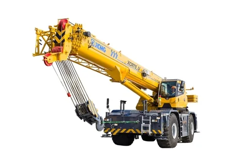

XCMG ARC CRANE BENCHMARK
XCMG XCR75U 75t 起重机竞品对标
按同吨级比较运输、底盘机动、主副臂、支腿、动力、卷扬、起重性能、作业速度和标选配状态，所有结论保留原始值与缺失状态。

对标概览
8对标产品数
47.0XCMG 参数竞争力
第 6参数排名
95%XCMG 参数覆盖率
评价边界
参数按当前吨级内同口径、方向归一化，八类权重合计 100%；配置仅在状态明确时按无配置 0、选配 60、标配 100 计入。当前配置有效覆盖率低于 60% 时，不生成综合总分和综合排名。
吨级市场与竞争定位
60-75 吨级越野吊集中服务住宅施工、电力检修、油气与工业设施、道路桥梁等场景。材料同时覆盖区域工况、参配对比、客户口碑及可靠性、安全性、操控性、舒适性和维修性评价。先明确该吨级在北美起重机产品线中的需求位置、主流产品范围和竞争边界，再进入具体产品比较。
占比 18.2% 布局 1 款
越野轮胎起重机占起重机产品线销量 34.1%，主流吨级包括 60 吨、75 吨、100 吨、130 吨，主需求吨级主要集中在 50 吨以上。
0-16.9 吨占比 4.2%，17-24.9 吨市场占比 3.6%，25-34.9 吨市场占比 7.6%，35-39.9 吨占比 2.3%，40-49.9 占比 0.7%。
50 吨以下市场整体占比在 18.4%，但需求分散，各吨级占比小，储备 50 美吨，根据市场需求推进。
现有型谱覆盖 XCR60_U、XCR75_U、XCR100_U 和 XCR130_U；165 美吨产品仍处于论证阶段。
0 - 16.9
17 - 24.9
30 - 34.9
35 - 39.9
40 - 49.9
50 - 65.9
66 - 80.9
81 - 110.9
111 -130
131 & Over
2022202320242024 年增长率
产品定位与推进计划
保留资料形成时的价格定位、销量目标和产品计划；规划内容仅作为决策输入，不代表已经上市或完成验证。
对比结论
越野轮胎起重机 60-75 吨产品段；对比结论：。
1、结合对适应性和核心竞争力对比分析，徐工越野轮胎起重机在整机作业性能、功能配置等方面相较竞品有优势，但考虑徐工起重机在高端市场突破初期，同时考虑中小吨位产品利润空间，确定产品定位为低于行业标杆 5%以内；
2、结合竞争力优势分析，2025 年该产品段的市场目标为产品销量突破。
75 吨越野轮胎起重机售价分析。
价格与市场位置对比
横轴为资料记录售价指标，纵轴为对应市场占有率；悬停或聚焦点位可查看数值。
徐工 XCR75_U64.1 / 0.7%多田野 GR-750XL-365.4 / 73.4%
| 75 吨 | 徐工 XCR75_U | 多田野 GR-750XL-3 | |
|---|---|---|---|
| 销售价格/万美元 | 64.1 | 65.4 | |
| 占有率/% | 0.7% | 73.4% |
总体评分与竞争位置
参数竞争力排名
八类参数竞争力
当前：全部品牌工况竞争全景
热力矩阵覆盖全部适用工况和全部产品；雷达仅使用完整可比数据。工况卡片先说明排名资格、关键输入和资料覆盖，再进入逐工况参数、配置、差距与提升模拟。
阅读边界
本场景将可追溯参数与配置组合为纸面适配性对比，不替代现场吊装方案、同口径载荷表复核或实机验证。
覆盖率仅表示 XCMG 自身字段完整度；排名需同时满足 XCMG 形成有效工况得分，且至少 2 个产品形成同口径可比得分。
贡献分仅表示该指标在当前工况权重下的作用，不等于整机性能的独立结论；提升模拟只使用已有可比字段，不自动假设缺失数据、工程可行性或成本。
区域需求与典型施工任务
按区域产业、气候、法规和施工任务展示真实应用条件，并把现场影像与对应作业要求放在同一处阅读。
美国东北部市场与工况
越野轮胎起重机 60-75 吨产品段。
区域范围：马萨诸塞州、缅因州、新罕布什尔州等，区域特点：老城区更新、高架作业多，空间限制大。
| 吨级 | 徐工型号 | 是否通用场景 | 施工场景 | 施工场景工况描述 (波士顿、普罗维登斯等) | 客户群 | 主要客户需求特点 | 竞品及型号 | 工况满足性分析 |
|---|---|---|---|---|---|---|---|---|
| 60-75 吨 | XCR60_U XCR75_U | 是 | 山区电力设备安装 | 在陡坡、泥泞或碎石路面，吊装电力设备，更换损坏的绝缘子串或横担 | 电力公司、中小租赁公司 | 要求起重机具备强爬坡能力，适应泥泞/碎石路面。 | GR-550XLL GR-750XL | 作业工况可以覆盖，已完成重点提升项：陡坡路况的轮胎离地间隙。 |
| XCR60_U XCR75_U | 是 | 城市外围桥梁与高架施工 | 在城市近郊丘陵、软土或填方区架设预制混凝土梁（30-50 吨，跨度 20-30 米） | 大中型租赁公司、土木工程公司。 | ①紧凑车身+多种转向模式，适应狭窄工地。 ②高精度液压控制，确保平稳落梁。 | GR-550XLL GR-750XL | 吊装作业工况可以满足，徐工起重能力更高， ①起重性能领先行业竞品②四种转向模式，行业最小转弯半径，一键转向模式切换，机动灵活。 | |
| XCR60_U XCR75_U | 是 | 市政管网施工 | 下水道重型管节（>3 吨）铺设。狭窄街道侧向吊装，减少开挖面。 | 小型承包商、租赁公司 | ①街道狭窄，需要车辆外形紧凑、多种组合跨距。 ②小幅度起重性能高，③接地比压小 | GR-550XLL GR-750XL | 作业工况可满足，但可以增加可变支撑功能满足部分客户需求 ①部分场地环境复杂，如有可变支撑，可进一步拓展工况适应性，建议选配。 ②中短臂性能领先。 ③支脚盘 0.55m×0.55m，支撑面积大，接地比压小。 |
美国中东部市场与工况
越野轮胎起重机 60-75 吨产品段。
区域范围：伊利诺伊、俄亥俄、印第安纳、密歇根等州，区域特点：城市集中、法规严格、电力/广告/通信高空作业多。
| 吨级 | 徐工型号 | 是否通用场景 | 施工场景 | 施工场景工况描述 (纽约、费城、新泽西) | 客户群 | 主要客户需求特点 | 竞品及型号 | 工况满足性分析 |
|---|---|---|---|---|---|---|---|---|
| 60-75 吨 | XCR60_U XCR75_U | 是 | 桥梁修复工程 | 桥梁下方更换预制桥面板（单块重 12-15 吨），作业面为河岸滩涂软泥地，空间受桥墩限制。 | 桥梁修复公司、小型租赁公司 | 1、紧凑空间机动性：可以穿越桥下狭窄通道； 2、恶劣路面适应性； 3、连续液压工作≥8 小时不过热。 | GR-550XLL GR-750XL | 作业工况可满足， ①60 吨级产品车宽控制在 2.98m。 ②越野花纹轮胎+整机轻量化设计，接地比压小 ③大功率散热器+温控开关，保证散热能力的同时，更节能。 |
| XCR60_U XCR75_U | 是 | 制造厂等设备升级改造 | 厂房内吊装，需要车辆能在狭窄空间下穿行，并能适应受限空间的支车，设备吊装一般为中短臂，有时需要低空作业。 | 专业汽车、钢铁生产厂、小型租赁公司 | ① 能够吊臂在很小仰角吊重； ② 狭小空间适应能力强，具有多种支腿跨距、四种转向模式。 ③吊装精度高，操作平稳、安全可靠。 | GR-550XLL GR-750XL | 作业工况可以满足，但需提升大幅度作业性能。 ①具有 0 度性能。 ②双变量泵系统，单泵作业微动性好，双泵作业效率高。 | |
| XCR60_U XCR75_U | 是 | 厂房建设 | 通常周围空间宽敞，需要起吊 1-5 吨的房屋辅料或设备吊至建筑物内，需要臂长长、作业幅度大。 | 小型承包商、个体散户 | ①在高层建筑施工，通常作业最大高度较大，负载大部分较轻； ②所需臂长长、作业幅度大。 | GR-550XLL GR-750XL | 作业工况可以覆盖，但需提升大幅度作业性能： 徐工臂长和起重性能领先，但最大作业幅度相比行业竞品略低，建议提升最大作业幅度。 |
美国东南部市场与工况
越野轮胎起重机 60-75 吨产品段。
区域范围：佛罗里达州、佐治亚州、南/北卡罗来纳州、阿拉巴马州，区域特点：平原地貌、房建旺盛、环境复杂。
| 吨级 | 徐工型号 | 是否通用场景 | 施工场景 | 施工场景工况描述 | 客户群 | 主要客户需求特点 | 竞品及型号 | 工况满足性分析 |
|---|---|---|---|---|---|---|---|---|
| 60-75 吨 | XCR60_U XCR75_U | 是 | 住宅施工 | 住宅施工：北美大部分房屋为木质结构，需用起重机对框架、板材进行吊装和就位安装。 | 小型建筑公司 小型吊装公司司 | ①典型工况为跨建筑吊装作业，对吊高能力要求低，作业幅度要求远≥30m，吊重量 1000lb； ②住宅施工时，经常需要跨建筑吊装，司机室操作人员视野被遮挡，需要能够观察吊重物及周围环境情况。 | GR-550XLL GR-750XL | 作业工况可以覆盖，但需进一步优化最大作业幅度。提升放远工况覆盖度。 |
| XCR60_U XCR75_U | 是 | 电力检修 | 部分为野外无路路面，坡路较多，最大坡度能达到 50%，需要吊装电塔、电气设备等。 | 电力公司、中小型租赁公司 | ①路面条件差，需要车辆有良好的越野能力和爬坡能力。 ②臂长长，轮胎离地间隙大 ③操作简单，具有虚拟墙功能 | GR-550XLL GR-750XL | 作业工况可满足 ①爬坡能力≥65%，②具有虚拟墙功能，可限制变幅、回转、伸缩范围③10.4 寸触摸显示屏，人机交互界面友好，可读性强，操作简单、方便。 | |
| XCR60_U XCR75_U | 是 | 电力抢修与风灾应急吊装 | 飓风/风暴后电力线缆恢复：高压杆更换，作业环境复杂，道路可能积水或软土，需快速部署。 | 市政部门 公共事业单位 | ① 响应速度快：需快速转场并展开； ② 地形适应性好，支持软土面支腿站稳； ③ 操控简便，适合单人/双人小组操作 | GR-550XLL GR-750XL | 能在短时间完成部署，适应路边/软土地带施工，建议加强抗盐雾能力（沿海） |
美国西海岸市场与工况
越野轮胎起重机 60-75 吨产品段。
区域范围：加利福尼亚州、华盛顿州、俄勒冈州。区域特点：加州沙尘、高温（＞40℃）；华盛顿州雨林、湿地、多雨丘陵，主要施工有道路交通、桥梁铺设、工程建设等。
| 吨级 | 徐工型号 | 是否通用场景 | 施工场景 | 施工场景工况描述 | 客户群 | 主要客户需求特点 | 竞品及型号 | 工况满足性分析 |
|---|---|---|---|---|---|---|---|---|
| 75 吨及以下 | XCR60_U XCR75_U | 是 | 道路交通 | 道路交通：各种道路施工，包括高速、城市道路等，吊装、转运各类施工材料、起重量一般在几吨到几十吨不等。 | 道路施工单位 租赁公司 | 道路施工使用越野轮胎起重机为普遍情况，一般工期长，需求设备容易上手、可靠性高。 | GR-550XLL GR-750XL | 工况可以覆盖，优势突出，包括人性化设计，特别是副臂和平衡重挂接，一键操作转向模式。相比竞争对手在操作环节，特别是副臂挂接方面省时省力操作便捷； |
| XCR60_U XCR75_U | 否 | 桥梁铺设 | 桥梁铺设：在高架或匝道建设中，吊装桥梁和各类建设材料，在远距离吊装时，特别是支车位置受限时，XCR75_U 更具备优势。 | 道路施工单位 租赁公司 | 高架或者匝道桥梁铺设，对近距离吊装能力、操作精准性要求较高。 | GR-550XLL GR-750XL | 工况可以覆盖，优势突出，包括品操控性能，需进一步优化回转比例制动缓冲效果。 | |
| XCR60_U XCR75_U | 否 | 工程建设 | 工程建设：包括各类厂房建设、机场等大型施工工程，用于吊装构件、建筑材料等。在远距离吊装时，特别是支车位置受限时，XCR75_U 更具备优势。 | 施工单位 租赁公司 | ①厂房或机场等建设、对作业范围要求比较高，特别是大幅度作业能力； ②施工项目对吊装操控性要求高，包括空调、设备等安装。 | GR-550XLL GR-750XL | 工况可以覆盖，优势突出，包括 起重性能强，在典型工况下优于竞争性能在 5%以上； 需优化低角度和 0°吊装工况，提升远距离大幅度工况的作业能力。 |
参数、配置与实机评价
把纸面参数与配置对比、客户使用反馈和实机观察分开呈现，避免将参数优势直接等同于现场表现。
对比结论
二、大区产品策略—美国和加拿大；越野轮胎起重机 60-75 吨产品段。
对比结论：从客户关注角度出发，徐工在使用经济性、安全性、环保性等方面具有优势，在产品细节、座椅舒适性和软文资料方面存在不足，具体提升方向如下：
| 对比方向 | 对比项目 | 对比项目 | 徐工 | 多田野 | 对比结论 | 提升方向 | 用户口碑 |
|---|---|---|---|---|---|---|---|
| 核心性能指标 | 经济性 | 作业性能 | 性能高 5%以上、作业快。 | 性能低于徐工、作业速度略慢 | 徐工起重机使用经济性优于竞品 | —— | 徐工口碑： 徐工越野轮胎起重机性能很高，功能配置很多用着不错，但是小毛病有点多，有时候我很无语。 品牌 2 口碑：多田野豪说他们的产品 2000 小时无故障，虽然事实有点差异，但是他们车用起来确实省心。 |
| 产品售价 | 价格低于竞品 15%左右 | 一线产品价格 | |||||
| 可靠性 | 反馈率 | 早期故障率略高，反馈电气总线问题 | 早期故障主要反馈 回转动作不好 | 徐工早期故障略多于竞品，随着设计质量提升，早期故障下降明显 | 重点提升电气系统可靠性，特别是总线 CAN 系统 | ||
| 环境适应性 | 温度 | -30℃~45℃ | -30℃~45℃ | 环境适应性基本相当。 | —— | ||
| 操控性 | 作业平顺性 | 整体动作平顺、响应快，微动性好 | 整体动作平顺、响应稍慢，微动性好 | 徐工动作响应快，微动性和平顺性和竞品相当 | —— | ||
| 舒适性 | 声舒适性 | 耳旁噪音略高于多田野 1-2db 辐射噪音低于多田野 3db | 司机耳旁噪音 72db 左右 辐射噪音在 105-108db | 徐工辐射噪音小，耳旁噪音稍高于多田野，座椅舒适性存在不足 | 优化扶手箱，提升座椅整体刚度。 | ||
| 人体姿态舒适性 | 座椅舒适性存在不足 | 座椅舒适性较好 | |||||
| 安全性 | 力限器精度 | 具有司机室于配重操控盒互锁 力限器精度 3% | 无司机室于配重操控盒互锁 力限器精度 5% | 综合安全性相当，徐工力限器精度高于多田野。 | —— | ||
| 环保性 | 作业油耗 | 高速行驶油耗低于竞品 20% | 高速行驶油耗高 | 徐工油耗更低 | —— | ||
| 产品细节 | 人机交互 | 徐工整机油漆细节存在不足 | 操作面板和功能布局存在不足，整机外观和细节涂装质量好 | 徐工产品细节略差 | 重点提升涂装和油漆喷涂质量 | ||
| 软文资料 | —— | 资料基本完善，但操维、保养培训资料存在不足 | 售前售后资料完善，培训体系健全 | 徐工软文资料存在不足 | 重点完善产品操作、维修、保养培训资料。 |
徐工 XCR60_U/XCR75_U 客户使用评价对标
越野轮胎起重机 60-75 吨产品段。
徐工 XCR60_U/XCR75_U 客户使用评价对标：相比竞品多田野，整机稳定性相当，在油漆质量和平均无故障工作时间方便低于竞品，需持续优化提升。
| 对比方向 | 对比维度 | 对比项目 | 徐工 | 多田野 | 竞品对标图片 | 对比结论 | 提升方向 |
|---|---|---|---|---|---|---|---|
| XCR60_U XCR75_U | GR-550XLL-3 GR-750XL-3 | ||||||
| 核心性能指标 | 可靠性 | 整机稳定性 | 额定载荷下在正侧方吊重，支腿无松动，但在 1.1 倍载荷时，由于车架变形，左后支腿略有闪缝。 | 额定载荷下在正侧方吊重，支腿无松动，但在 1.1 倍载荷时，由于车架变形，左后支腿略有闪缝。 | 整机稳定性相当 | 无 | |
| 2 年整车锈蚀点 | 机棚、车架、走台板、小支架、标准件等有多处锈蚀。 | 除磕碰处外，基本无锈蚀点 | 徐工油漆质量不及多田野 | 需提升油漆质量，达到行业标杆水平。 | |||
| 平均无故障工作时间 | 根据客户评价，整机平均无故障工作时间较多田野短，主要体现在液压、电气系统一些小故障方面。 | 整机平均无故障工作时间长，可靠性较高。 | 整机平均无故障工作时间不及多田野 | 提重点提升液压、电气系统可靠性，对管线路固定进行优化，避免电气插头松动、虚接等引起的可靠性问题。 |
徐工 XCR60_U/XCR75_U 客户使用评价对标
越野轮胎起重机 60-75 吨产品段。
徐工 XCR60_U/XCR75_U 客户使用评价对标：在安全性方面。相比竞品，徐工耳旁噪音略高，辐射噪音低于竞品 3dB 左右；徐工力限器精度高，整体安全控制逻辑优于竞品，行驶制动能力优于竞品。
| 对比方向 | 对比维度 | 对比项目 | 徐工 | 多田野 | 竞品对标图片 | 对比结论 | 提升方向 |
|---|---|---|---|---|---|---|---|
| XCR60_U XCR75_U | GR-550XLL-3 GR-750XL-3 | ||||||
| 核心性能指标 | 安全性 | 噪音 | 60USt：司机室耳旁噪音在 73.3dB 左右，辐射噪音 106dB 75USt：司机室耳旁噪音在 74.6dB 左右，辐射噪音 107.2dB | 司机室耳旁噪音较我司产品低 1-2dB 辐射噪音高于我司 3dB 左右 | 徐工耳旁噪音高于竞品 1-2dB；辐射噪音低于竞品 3dB 左右。都满足标准要求。 | 无 | |
| 控制功能 | 1、徐工力限器系统满足北美 ASME.B30.5 同时兼顾 CE 安全性要求，增加多方向限动限速； 2、力限器精度：幅度误差 1-3%；吊重量误差 5-6%； 3、风速仪仅报警，不限动 4、徐工配重盒与司机室有配重操作互锁功能 5、有支腿跨距检测功能 6、有回转锁止状态检测 | 1、力限器控制逻辑仅满足 ASME.B30.5； 2、力限器精度：幅度误差 3-5%；吊重量误差 6-8%； 3、风速仪仅报警，不限动 4、配重盒与司机室无互锁功能 5、有支腿跨距检测功能 6、有回转锁止检测 | 徐工安全控制逻辑优于多田野 | 无 | |||
| 行驶安全 | 1、行车制动距离≤9m； 2、连续实施 5 次行车制动，压力始终处于安全状态。 | 1、行车制动距离≤9m； 2、连续实施 5 次行车制动，压力出现不足，触发自动制动。 | 徐工行驶安全性优于多田野 | 无 |
徐工 XCR60_U/XCR75_U 客户使用评价对标
越野轮胎起重机 60-75 吨产品段。
徐工 XCR60_U/XCR75_U 客户使用评价对标：在操控性方面，徐工回转平顺性、变幅落微动性、伸缩极限位置平顺性略低于 TD，在空载起升平顺性、调速范围、伸缩响应速度方面优于 TD。
| 对比方向 | 对比维度 | 对比项目 | 徐工 | 多田野 | 竞品对标图片 | 对比结论 | 提升方向 |
|---|---|---|---|---|---|---|---|
| XCR60_U XCR75_U | GR-550XLL-3 GR-750XL-3 | ||||||
| 核心性能指标 | 操控性 | 回转动作 | 微动性：最小稳定速度小 响应性：响应速度一般 准确性：调速范围小 平顺性：回转无冲击，平顺好，但回转比例制动效果一般 | 微动性：最小稳定速度小 响应性：建压快，响应快 准确性：调速范围大于我司 平顺性：回转无冲击，平顺好 | 和多田野相比，徐工回转平顺性相当，但回转比例制动效果一般 | 提升回转比例制动效果 | |
| 起升动作 | 微动性：最小稳定速度小 响应性：响应速度快 准确性：调速范围大 平顺性：空载、重载平顺性均良好 | 微动性：最小稳定速度小 响应性：响应速度快 准确性：调速范围小于我司 平顺性：空载平顺性一般，重载平顺性良好 | 徐工和竞品基本相当 | 无 | |||
| 变幅动作 | 微动性：变幅起优，落一般 响应性：响应速度快 准确性：调速范围大 平顺性：空载、重载平顺性均良好 | 微动性：变幅起一般，落优 响应性：响应速度较快 准确性：调速范围与我司相当 平顺性：空载、重载平顺性均良好 | 变幅落不及竞品，需重点控制变幅油缸及铰点加工质量。 | 变幅重点提升结构变幅铰点加工误差控制 | |||
| 伸缩动作 | 响应性：响应速度快 平顺性：极限位置平顺性一般 | 响应性：响应速度一般 平顺性：平顺性好 | 徐工伸缩和竞品基本相当，但在伸缩全伸臂缓冲设计上应提升和改进。 | 上缸和下缸全伸臂增加缓冲设计 | |||
| 复合动作 | 平顺性：各动作复合平顺性较好 | 平顺性：各动作复合平顺性较好 | 徐工复合动作与竞品相当 | 无 |
徐工 XCR60_U/XCR75_U 客户使用评价对标
越野轮胎起重机 60-75 吨产品段。
徐工 XCR60_U/XCR75_U 客户使用评价对标：徐工低温启动功能齐全，与竞品 TD 相当，空调制冷制热效果略优与 TD。
| 对比方向 | 对比维度 | 对比项目 | 徐工 | 多田野 | 竞品对标图片 | 对比结论 | 提升方向 |
|---|---|---|---|---|---|---|---|
| XCR60_U XCR75_U | GR-550XLL-3 GR-750XL-3 | ||||||
| 核心性能指标 | 环境适应性 | 低温启动 | 在-30℃环境下，将车辆放置 24h, 打开脱泵装置能一次成功启动。 冷启动措施： ①发动机进气预热 ②发动机缸体加热（冷却液加热） ③ 脱泵装置 ④燃油加热 | 在-30℃环境下，将车辆放置 24h, 打开脱泵装置能一次成功启动。 冷启动措施： ①发动机进气预热 ②发动机缸体加热（电热塞） ③ 脱泵装置（三个泵，只脱开两个泵） ④燃油加热 | 在低温环境下，徐工产品与竞品冷启动性能基本相当。 | 无 | |
| 空调 | 制冷性能： 制冷效果较好，在前 5min，温度降低较快 制热性能：制热效果好，独立加热，不受发动机限制。 除霜性能：除霜效果好 | 制冷性能： 效果相比我司略差，温度降低比我司慢。 制热性能：采用下车发动机热水供热，热损耗较大，需发动机持续运转保证制热。 除霜性能：除霜效果与我司相当。 | 制冷、制热性能，徐工优于多田野。 | 无 |
徐工 XCR60_U/XCR75_U 客户使用评价对标
越野轮胎起重机 60-75 吨产品段。
徐工 XCR60_U/XCR75_U 客户使用评价对标：与 TD 相比，维修性有优有劣，需重点对传动轴维保方便性进行优化，在故障自诊断方面，徐工更智能，使用更方便。
| 对比方向 | 对比维度 | 对比项目 | 徐工 | 多田野 | 竞品对标图片 | 对比结论 | 提升方向 |
|---|---|---|---|---|---|---|---|
| XCR60_U XCR75_U | GR-550XLL-3 GR-750XL-3 | ||||||
| 核心性能指标 | 维修性 | 维保方便性 | 徐工优于多田野共 8 项，劣于多田野 5 项，但整体均满足客户使用需求。具体如下： 优势项：发动机、变速箱、油泵检修方便性好；空调燃油加注、空滤器滤芯更换方便好；具有压力检测口，测压方便。 劣势项：蓄电池、传动轴检修方便性略低；发动机机油滤芯更换、变速箱机油检查、洗涤液加注方便性略低。 | 徐工优于多田野共 8 项，劣于多田野 5 项，但整体均满足客户使用需求。 | 新开发产品对传动轴、维保方便性进行提升。 | ||
| 故障自诊断 | 采用故障自诊断系统，可实时监控车辆状态，当检测到故障时，通过在显示器上显示故障代码，通过点击故障代码可查询问题原因及排查方法。 | 具有故障自诊断功能，当出现故障时，按显示器下面的 F1 按键，可以显示出故障原因和推荐的解决方法。 | 徐工故障自诊断功能优于多田野，更智能、方便，诊断率高。 | 无 |
高覆盖工况雷达
当前：全部可比品牌雷达图仅使用图中各产品均有完整可比值的工况；全部适用工况仍在热力矩阵中展示。
产品 × 工况热力矩阵
XCMG XCR75U道路运输32.8第 6快速转场—不排名场地机动71.7第 2狭窄调位82.9第 2近幅重载29.0第 7中幅安装69.9第 1长臂高空45.7第 2副臂远幅10.5第 7不平地面48.8第 1部分支腿69.6第 1轮胎带载2.1第 7循环效率53.5第 4精密维保78.4第 1全天候作业—不排名城市公用设施68.8第 2工业停机检修62.6第 1道路桥梁安装57.6第 2应急抢险61.2第 2港口堆场53.8第 6
Tadano GR-800XL-4道路运输44.6第 4快速转场26.3第 4场地机动68.2第 3狭窄调位83.6第 1近幅重载49.8第 4中幅安装21.9第 7长臂高空26.5第 5副臂远幅54.5第 3不平地面42.0第 3部分支腿50.0第 3轮胎带载60.6第 3循环效率45.4第 5精密维保63.6第 3全天候作业—不排名城市公用设施42.4第 4工业停机检修24.7第 7道路桥梁安装22.3第 6应急抢险37.5第 7港口堆场55.5第 5
Tadano GR-800XXL-4道路运输44.0第 5快速转场83.3第 1场地机动65.4第 5狭窄调位—不排名近幅重载71.7第 1中幅安装49.9第 3长臂高空63.8第 1副臂远幅91.7第 1不平地面42.0第 4部分支腿53.2第 2轮胎带载86.0第 2循环效率41.3第 6精密维保59.7第 4全天候作业—不排名城市公用设施69.2第 1工业停机检修48.7第 4道路桥梁安装60.1第 1应急抢险54.8第 3港口堆场56.2第 4
Grove GRT780道路运输66.5第 1快速转场53.8第 2场地机动84.5第 1狭窄调位58.1第 5近幅重载53.0第 3中幅安装53.7第 2长臂高空31.1第 4副臂远幅43.8第 5不平地面0.0第 7部分支腿2.9第 7轮胎带载37.3第 4循环效率94.4第 1精密维保—不排名全天候作业—不排名城市公用设施32.6第 6工业停机检修50.1第 2道路桥梁安装26.2第 5应急抢险61.7第 1港口堆场92.0第 1
Link-Belt 75RT道路运输60.6第 2快速转场35.9第 3场地机动67.2第 4狭窄调位72.3第 3近幅重载41.2第 5中幅安装36.5第 5长臂高空38.5第 3副臂远幅53.2第 4不平地面40.9第 5部分支腿40.9第 5轮胎带载91.7第 1循环效率62.7第 3精密维保—不排名全天候作业—不排名城市公用设施55.6第 3工业停机检修48.2第 5道路桥梁安装42.1第 3应急抢险47.7第 4港口堆场63.8第 2
Terex TRT80US道路运输47.8第 3快速转场24.8第 5场地机动62.7第 6狭窄调位59.3第 4近幅重载37.1第 6中幅安装25.8第 6长臂高空23.7第 7副臂远幅11.9第 6不平地面47.8第 2部分支腿46.5第 4轮胎带载18.9第 6循环效率28.5第 7精密维保22.0第 5全天候作业—不排名城市公用设施41.7第 5工业停机检修30.9第 6道路桥梁安装34.5第 4应急抢险43.4第 5港口堆场23.4第 7
Zoomlion ZRT800V542A道路运输—不排名快速转场—不排名场地机动—不排名狭窄调位—不排名近幅重载—不排名中幅安装—不排名长臂高空—不排名副臂远幅—不排名不平地面—不排名部分支腿—不排名轮胎带载—不排名循环效率—不排名精密维保—不排名全天候作业—不排名城市公用设施—不排名工业停机检修—不排名道路桥梁安装—不排名应急抢险—不排名港口堆场—不排名
Sany SRA750A道路运输31.5第 7快速转场—不排名场地机动44.5第 7狭窄调位33.6第 6近幅重载66.2第 2中幅安装40.2第 4长臂高空23.9第 6副臂远幅58.6第 2不平地面6.8第 6部分支腿10.3第 6轮胎带载24.6第 5循环效率72.7第 2精密维保78.4第 2全天候作业—不排名城市公用设施22.4第 7工业停机检修49.4第 3道路桥梁安装17.9第 7应急抢险38.7第 6港口堆场59.4第 3
绿色表示可比结果较强，黄色表示中间区间，红色表示相对较弱；灰色表示该产品未形成有效工况得分，或该工况少于 2 个产品可比。资料未记录不按 0 分处理。
工程能力工况
按单一作业能力拆解参数、配置、排名和差距。
道路运输
32.8第 6 / 7 · 距首位 33.6 分
- 关键参数
- 最小运输重量、运输宽度、运输高度
- 有益配置
- 牵引钩、支腿垫木架
快速转场
—XCMG 有效关键参数 2/4 项，少于形成工况参数分所需的 3 项
- 关键参数
- 可拆卸配重、配重组合数量、最大配重行驶速度
- 有益配置
- 牵引钩、支腿垫木架
场地机动
71.7第 2 / 7 · 距首位 12.8 分
- 关键参数
- 最高行驶速度、最小转弯半径、转向模式数量
- 有益配置
- 轮胎配置
狭窄调位
82.9第 2 / 6 · 距首位 0.7 分
- 关键参数
- 最小转弯半径、尾部回转半径、主臂基本臂长度
- 有益配置
- 360° 上车机械锁止
近幅重载
29.0第 7 / 7 · 距首位 42.7 分
- 关键参数
- 无专用附件最大起重量、主臂 5m 幅度起重量、主卷扬最大单绳拉力
- 有益配置
- 重型配重包
中幅安装
69.9第 1 / 7 · 距首位 0.0 分
- 关键参数
- 主臂 15m 幅度起重量、主卷扬最大单绳拉力、主卷扬最大绳速
- 有益配置
- 无明确配置项
长臂高空
45.7第 2 / 7 · 距首位 18.1 分
- 关键参数
- 主臂全伸长度、主臂最大额定幅度、主臂 30m 幅度起重量
- 有益配置
- 重型配重包
副臂远幅
10.5第 7 / 7 · 距首位 81.2 分
- 关键参数
- 随车携带最大副臂长度、副臂延伸节数量、基本副臂 20m 幅度起重量
- 有益配置
- 短副臂
不平地面
48.8第 1 / 7 · 距首位 0.0 分
- 关键参数
- 支腿全伸跨度、支腿伸缩档位数量
- 有益配置
- 2° 倾斜工况载荷表、支腿垫木架
部分支腿
69.6第 1 / 7 · 距首位 0.0 分
- 关键参数
- 支腿全伸跨度、支腿伸缩档位数量、尾部回转半径
- 有益配置
- 2° 倾斜工况载荷表、支腿垫木架
轮胎带载
2.1第 7 / 7 · 距首位 89.6 分
- 关键参数
- 带载行驶 5m 幅度起重量、最高行驶速度
- 有益配置
- 轮胎配置、360° 上车机械锁止
循环效率
53.5第 4 / 7 · 距首位 40.9 分
- 关键参数
- 主卷扬最大单绳拉力、副卷扬最大单绳拉力、主卷扬最大绳速
- 有益配置
- 集中自动润滑系统
精密维保
78.4第 1 / 5 · 距首位 0.0 分
- 关键参数
- 主卷扬最大绳速、副卷扬最大绳速、回转速度
- 有益配置
- 360° 上车机械锁止
全天候作业
—XCMG 配置状态仅记录 0/4 项（权重覆盖 0%），工况组合有效权重 45% 低于 60%
- 关键参数
- 发动机功率、发动机扭矩、燃油箱容量
- 有益配置
- 集中自动润滑系统、发动机燃油加热器
典型施工场景
把多个工程能力组合到真实任务中；属于纸面适配性对比，不替代现场试吊。
城市公用设施
68.8第 2 / 7 · 距首位 0.4 分
- 关键参数
- 最小转弯半径、尾部回转半径、主臂基本臂长度
- 有益配置
- 360° 上车机械锁止、2° 倾斜工况载荷表
工业停机检修
62.6第 1 / 7 · 距首位 0.0 分
- 关键参数
- 主臂 15m 幅度起重量、主臂 30m 幅度起重量、副卷扬最大单绳拉力
- 有益配置
- 免润滑主臂、集中自动润滑系统
道路桥梁安装
57.6第 2 / 7 · 距首位 2.5 分
- 关键参数
- 最小转弯半径、最大爬坡度、支腿全伸跨度
- 有益配置
- 2° 倾斜工况载荷表、支腿垫木架
应急抢险
61.2第 2 / 7 · 距首位 0.5 分
- 关键参数
- 最高行驶速度、最小转弯半径、最大爬坡度
- 有益配置
- 牵引钩、轮胎配置
港口堆场
53.8第 6 / 7 · 距首位 38.2 分
- 关键参数
- 最高行驶速度、最小转弯半径、主卷扬最大单绳拉力
- 有益配置
- 集中自动润滑系统、360° 上车机械锁止
本吨级实机评价结论
同一实机观察只在此汇总一次，并标明影响的工况，避免在逐工况分析中重复出现。
历史实机评价显示整机稳定性与多田野相当；油漆质量和平均无故障工作时间仍是可靠性补强重点。
关联工况：道路运输 / 轴荷与外廓合规、场地进出 / 越野机动、近幅度 / 重载吊装、支腿展开 / 不平地面稳定、部分支腿 / 受限支撑、轮胎吊装 / 带载行驶、应急抢险 / 快速响应吊装维修性表现有优有劣，传动轴维保便利性需改进；故障自诊断的智能化和易用性是已有基础。
关联工况：快速拆装 / 多工地转场、连续循环 / 双卷扬协同、油气装置 / 工业停机检修回转平顺性、变幅下落微动性和伸缩极限位置平顺性弱于多田野；空载起升平顺性、调速范围和伸缩响应较好。
关联工况：狭窄场地 / 精细调位、中幅度 / 结构安装、长臂大幅度 / 高空安装、副臂组合 / 远幅度作业、精密落钩 / 高空维保、城市更新 / 公用设施高空作业、道路桥梁 / 基础设施构件安装、港口堆场 / 高频装卸低温启动功能与多田野相当，驾驶室制冷和制热效果略优；仍需按目标环境进行当前量产配置复核。
关联工况：低温环境 / 全天候连续作业XCMG 可核验差距台账
每项独立差距只列一次，右侧集中标明同一工程限制影响的全部工况。
| # | 可核验参数差距 | 影响工况 |
|---|---|---|
| 01 | 最小运输重量：XCMG 46,755 kg，Grove GRT780 36,459 kg，标杆在当前评价方向上低约 10,296 kg。 | 道路运输 / 轴荷与外廓合规 |
| 02 | 运输宽度：XCMG 3,749 mm，Grove GRT780 2,997 mm，标杆在当前评价方向上低约 752 mm。 | 道路运输 / 轴荷与外廓合规 |
| 03 | 运输长度：XCMG 14,356 mm，Terex TRT80US 13,411 mm，标杆在当前评价方向上低约 945 mm。 | 道路运输 / 轴荷与外廓合规、快速拆装 / 多工地转场 |
| 04 | 可拆卸配重：XCMG 明确记录为无；Tadano GR-800XXL-4 为 24,700 kg。 | 道路运输 / 轴荷与外廓合规、快速拆装 / 多工地转场 |
| 05 | 最高行驶速度：XCMG 25 kph，Tadano GR-800XXL-4 36 kph，标杆在当前评价方向上高约 11 kph。 | 场地进出 / 越野机动、轮胎吊装 / 带载行驶、应急抢险 / 快速响应吊装、港口堆场 / 高频装卸 |
| 06 | 最大爬坡度：XCMG 70 %，Grove GRT780 126 %，标杆在当前评价方向上高约 56 %。 | 场地进出 / 越野机动、道路桥梁 / 基础设施构件安装、应急抢险 / 快速响应吊装 |
| 07 | 主臂基本臂长度：XCMG 11.8 m，Tadano GR-800XXL-4 12.8 m，标杆在当前评价方向上高约 1 m。 | 狭窄场地 / 精细调位、城市更新 / 公用设施高空作业 |
| 08 | 回转速度：XCMG 1.5 rpm，Zoomlion ZRT800V542A 2.5 rpm，标杆在当前评价方向上高约 1 rpm。 | 狭窄场地 / 精细调位、中幅度 / 结构安装、精密落钩 / 高空维保、城市更新 / 公用设施高空作业、油气装置 / 工业停机检修、道路桥梁 / 基础设施构件安装、应急抢险 / 快速响应吊装 |
| 09 | 无专用附件最大起重量：XCMG 60,000 kg，Tadano GR-800XL-4 72,574 kg，标杆在当前评价方向上高约 12,574 kg。 | 近幅度 / 重载吊装 |
| 10 | 主臂 5m 幅度起重量：XCMG 40,000 kg，Tadano GR-800XXL-4 61,280 kg，标杆在当前评价方向上高约 21,280 kg。 | 近幅度 / 重载吊装、应急抢险 / 快速响应吊装 |
| 11 | 主卷扬最大单绳拉力：XCMG 60.65 kN，Grove GRT780 76.3 kN，标杆在当前评价方向上高约 15.65 kN。 | 近幅度 / 重载吊装、中幅度 / 结构安装、连续循环 / 双卷扬协同、港口堆场 / 高频装卸 |
| 12 | 主卷扬最大绳速：XCMG 150 m/min，Grove GRT780 165 m/min，标杆在当前评价方向上高约 15 m/min。 | 近幅度 / 重载吊装、中幅度 / 结构安装、连续循环 / 双卷扬协同、精密落钩 / 高空维保、港口堆场 / 高频装卸 |
| 13 | 主臂全伸长度：XCMG 45 m，Tadano GR-800XXL-4 51 m，标杆在当前评价方向上高约 6 m。 | 长臂大幅度 / 高空安装 |
| 14 | 主臂最大额定幅度：XCMG 30 m，Tadano GR-800XXL-4 47 m，标杆在当前评价方向上高约 17 m。 | 长臂大幅度 / 高空安装 |
| 15 | 主臂 30m 幅度起重量：XCMG 2,800 kg，Tadano GR-800XXL-4 4,173 kg，标杆在当前评价方向上高约 1,373 kg。 | 长臂大幅度 / 高空安装、城市更新 / 公用设施高空作业、油气装置 / 工业停机检修、道路桥梁 / 基础设施构件安装 |
| 16 | 随车携带最大副臂长度：XCMG 16 m，Tadano GR-800XL-4 17.7 m，标杆在当前评价方向上高约 1.7 m。 | 副臂组合 / 远幅度作业 |
| 17 | 基本副臂 20m 幅度起重量：XCMG 3,900 kg，Sany SRA750A 7,700 kg，标杆在当前评价方向上高约 3,800 kg。 | 副臂组合 / 远幅度作业 |
| 18 | 基本副臂 30m 幅度起重量：XCMG 2,000 kg，Tadano GR-800XXL-4 4,218 kg，标杆在当前评价方向上高约 2,218 kg。 | 副臂组合 / 远幅度作业 |
| 19 | 基本副臂最大幅度：XCMG 32 m，Tadano GR-800XXL-4 56.4 m，标杆在当前评价方向上高约 24.4 m。 | 副臂组合 / 远幅度作业 |
| 20 | 支腿全伸跨度：XCMG 7.4 m，Zoomlion ZRT800V542A 8.15 m，标杆在当前评价方向上高约 0.75 m。 | 支腿展开 / 不平地面稳定、部分支腿 / 受限支撑、道路桥梁 / 基础设施构件安装 |
| 21 | 带载行驶 5m 幅度起重量：XCMG 8,300 kg，Link-Belt 75RT 22,400 kg，标杆在当前评价方向上高约 14,100 kg。 | 轮胎吊装 / 带载行驶 |
| 22 | 副卷扬最大单绳拉力：XCMG 60.65 kN，Grove GRT780 76.3 kN，标杆在当前评价方向上高约 15.65 kN。 | 连续循环 / 双卷扬协同、油气装置 / 工业停机检修、港口堆场 / 高频装卸 |
| 23 | 副卷扬最大绳速：XCMG 150 m/min，Grove GRT780 165 m/min，标杆在当前评价方向上高约 15 m/min。 | 连续循环 / 双卷扬协同、精密落钩 / 高空维保、油气装置 / 工业停机检修 |
| 24 | 发动机功率：XCMG 194 kW，Link-Belt 75RT 270 kW，标杆在当前评价方向上高约 76 kW。 | 低温环境 / 全天候连续作业 |
| 25 | 发动机扭矩：XCMG 987 Nm，Sany SRA750A 1,288 Nm，标杆在当前评价方向上高约 301 Nm。 | 低温环境 / 全天候连续作业 |
| 26 | 燃油箱容量：XCMG 305 l，Sany SRA750A 357 l，标杆在当前评价方向上高约 52 l。 | 低温环境 / 全天候连续作业 |
工程能力工况 01
7 个参数 / 2 个配置项道路运输 / 轴荷与外廓合规
用于判断设备在州际道路运输、工地间转场和配重拆装中的合规性与组织效率。运输重量和单轴载荷决定许可与车辆组合，宽高长度决定路线限制，可拆配重、配重组合及最大配重状态行驶能力决定到场后的恢复速度。
作业执行与工程验证把纸面对比还原为可复现的现场任务
- 典型客户
- 租赁公司、经销商、大件运输承包商和跨州施工项目
- 典型吊物 / 工作对象
- 整机、配重、副臂、垫木及随车吊具
标准任务链
- 01
冻结运输配置，明确随车与拆分运输的配重、臂架和附件状态。
- 02
复核整机质量、轴荷与外廓，匹配拖车、许可和限高限宽路线。
- 03
制定配重装卸、捆扎和附件固定方案，记录需要的辅助车辆与人员。
- 04
到场后按确定配置恢复整机，完成调平、功能检查和载荷表状态确认。
- 05
记录从进场到具备首吊条件的时间，形成不同运输组合的标准节拍。
现场约束与判断边界
- 运输质量必须按实际配重和附件状态核算，不能混用空载宣传值。
- 跨州路线受轴荷、总重、宽高和桥涵限制，车辆组合不能只按总质量选择。
- 到场恢复后的载荷表、配重识别和安全装置状态必须与实际配置一致。
工程边界
运输合规不等于吊装可执行；首吊前仍须按实际站位、配重、支腿和臂架状态重新核对载荷表。
建议验证记录
记录实测结果，不虚构通过阈值运输质量与轴荷
按每种配重组合称重或使用经验证的质量分配表。
记录：总重、各轴荷、质量偏差运输外廓
在固定行驶姿态测量长、宽、高并核对路线限制。
记录：路线限制、许可类别、护送需求到场恢复
从车辆到场计时至配重、支腿、RCL 和载荷表全部可用。
记录：工时、辅助车辆数、首吊准备时间牵引钩、垫木架、可拆配重和多配重组合有利于运输组织与到场恢复。
参数权重 85%，配置权重 15%。参数覆盖 77% / 配置覆盖 0%
关键参数 / 配置对比
当前：全部品牌工况评分排名
参数覆盖 77% / 配置覆盖 0%
全部指标 / 配置贡献明细
| 类型 | 指标 / 配置 | 工况权重 | 对工况影响 | XCMG XCR75U | Tadano GR-800XL-4 | Tadano GR-800XXL-4 | Grove GRT780 | Link-Belt 75RT | Terex TRT80US | Zoomlion ZRT800V542A | Sany SRA750A |
|---|---|---|---|---|---|---|---|---|---|---|---|
| 参数 | 最小运输重量 | 26.7% | 决定道路许可、拖车组合和轴荷余量。 | 46,755 kg指标分 0.0加权贡献 0.0 | 40,206 kg指标分 63.6加权贡献 17.0 | 43,812 kg指标分 28.6加权贡献 7.6 | 36,459 kg指标分 100.0加权贡献 26.7 | 37,723 kg指标分 87.7加权贡献 23.4 | 42,207 kg指标分 44.2加权贡献 11.8 | 43,772 kg指标分 29.0加权贡献 7.7 | 45,280 kg指标分 14.3加权贡献 3.8 |
| 参数 | 运输宽度 | 12.1% | 决定路线限制、超限许可与运输组织难度。 | 3,749 mm指标分 0.0加权贡献 0.0 | 3,315 mm指标分 57.7加权贡献 7.0 | 3,315 mm指标分 57.7加权贡献 7.0 | 2,997 mm指标分 100.0加权贡献 12.1 | 3,100 mm指标分 86.3加权贡献 10.5 | 2,998 mm指标分 99.9加权贡献 12.1 | — mm指标分 —加权贡献 — | 3,300 mm指标分 59.7加权贡献 7.3 |
| 配置 | 牵引钩 | 9.8% | 支持牵引救援与转场组织。 | 资料未记录指标分 —加权贡献 — | 资料未记录指标分 —加权贡献 — | 资料未记录指标分 —加权贡献 — | 选配指标分 60.0加权贡献 5.9 | 选配指标分 60.0加权贡献 5.9 | 资料未记录指标分 —加权贡献 — | 资料未记录指标分 —加权贡献 — | 资料未记录指标分 —加权贡献 — |
| 参数 | 可拆卸配重 | 9.7% | 影响运输拆分、到场装配和可用载荷表。 | 无指标分 —加权贡献 — | 4,355 kg指标分 0.0加权贡献 0.0 | 24,700 kg指标分 100.0加权贡献 9.7 | 9,300 kg指标分 24.3加权贡献 2.4 | 6,600 kg指标分 11.0加权贡献 1.1 | 7,983 kg指标分 17.8加权贡献 1.7 | — kg指标分 —加权贡献 — | 无指标分 —加权贡献 — |
| 参数 | 最大配重行驶速度 | 9.7% | 影响运输拆分、到场装配和可用载荷表。 | — kph指标分 —加权贡献 — | — kph指标分 —加权贡献 — | — kph指标分 —加权贡献 — | — kph指标分 —加权贡献 — | — kph指标分 —加权贡献 — | — kph指标分 —加权贡献 — | — kph指标分 —加权贡献 — | — kph指标分 —加权贡献 — |
| 参数 | 运输高度 | 9.7% | 决定路线限制、超限许可与运输组织难度。 | 3,291 mm指标分 100.0加权贡献 9.7 | 3,805 mm指标分 15.6加权贡献 1.5 | 3,805 mm指标分 15.6加权贡献 1.5 | 3,876 mm指标分 3.9加权贡献 0.4 | 3,900 mm指标分 0.0加权贡献 0.0 | 3,861 mm指标分 6.4加权贡献 0.6 | — mm指标分 —加权贡献 — | 3,810 mm指标分 14.8加权贡献 1.4 |
| 参数 | 运输长度 | 9.7% | 决定路线限制、超限许可与运输组织难度。 | 14,356 mm指标分 46.7加权贡献 4.5 | 14,377 mm指标分 45.5加权贡献 4.4 | 15,185 mm指标分 0.0加权贡献 0.0 | 14,819 mm指标分 20.6加权贡献 2.0 | 13,900 mm指标分 72.4加权贡献 7.0 | 13,411 mm指标分 100.0加权贡献 9.7 | — mm指标分 —加权贡献 — | 13,700 mm指标分 83.7加权贡献 8.1 |
| 参数 | 配重组合数量 | 7.3% | 影响运输拆分、到场装配和可用载荷表。 | 3指标分 100.0加权贡献 7.3 | 2指标分 50.0加权贡献 3.6 | 3指标分 100.0加权贡献 7.3 | 3指标分 100.0加权贡献 7.3 | 2指标分 50.0加权贡献 3.6 | 1指标分 0.0加权贡献 0.0 | —指标分 —加权贡献 — | 1指标分 0.0加权贡献 0.0 |
| 配置 | 支腿垫木架 | 5.2% | 便于随车携带垫木并缩短支腿准备时间。 | 资料未记录指标分 —加权贡献 — | 资料未记录指标分 —加权贡献 — | 资料未记录指标分 —加权贡献 — | 选配指标分 60.0加权贡献 3.1 | 资料未记录指标分 —加权贡献 — | 资料未记录指标分 —加权贡献 — | 资料未记录指标分 —加权贡献 — | 资料未记录指标分 —加权贡献 — |
XCMG 工况提升模拟
32.8模拟工况分当前位置
工程能力工况 02
4 个参数 / 3 个配置项快速拆装 / 多工地转场
用于判断租赁设备在连续多工地任务中的拆装、配重转换和到场恢复效率。可拆配重、配重组合、随车配重能力和带配重行驶速度决定转场拆分方案；牵引钩、垫木架和集中润滑影响现场准备及非生产停机时间。
作业执行与工程验证把纸面对比还原为可复现的现场任务
- 典型客户
- 租赁公司、工业检修承包商、设备安装与多工地施工团队
- 典型吊物 / 工作对象
- 配重、垫木、吊钩、副臂、索具与日常维护物料
标准任务链
- 01
接收任务后锁定吊重、幅度、站位与下一工地距离，选择最少拆分的合规配置。
- 02
按标准清单装载垫木、索具和附件，避免到场后二次调货。
- 03
完成配重转换、附件固定和道路检查，记录拆装步骤及人工。
- 04
到场后调平、展开支腿、完成班前检查并加载正确工况。
- 05
以首吊准备时间和收车时间复盘非生产停机。
现场约束与判断边界
- 快速转场不能省略配置确认、班前检查和支腿地基复核。
- 随车附件越完整，运输质量和轴荷压力越大，需要同时优化而非单项追求。
- 现场节拍应把等待辅助吊、配重车和垫木的时间单独记录。
工程边界
节拍必须在满足制造商程序和安全检查的前提下比较，不能把省略步骤形成的时间优势计入产品能力。
建议验证记录
记录实测结果，不虚构通过阈值拆装步骤
逐步记录配重、附件和支腿准备动作。
记录：步骤数、人工、工具与辅助设备转场准备
连续执行收车、运输、到场恢复的完整演练。
记录：收车时间、首吊准备时间维护停机
按班次记录润滑、加注和日检所需时间。
记录：分钟/班、漏项与返工可拆配重、多配重组合、随车垫木架、牵引钩和集中润滑可减少拆装、等待和跨工地准备时间。
参数权重 78%，配置权重 22%。参数覆盖 43% / 配置覆盖 0%
关键参数 / 配置对比
当前：全部品牌工况评分排名
参数覆盖 43% / 配置覆盖 0%
全部指标 / 配置贡献明细
| 类型 | 指标 / 配置 | 工况权重 | 对工况影响 | XCMG XCR75U | Tadano GR-800XL-4 | Tadano GR-800XXL-4 | Grove GRT780 | Link-Belt 75RT | Terex TRT80US | Zoomlion ZRT800V542A | Sany SRA750A |
|---|---|---|---|---|---|---|---|---|---|---|---|
| 参数 | 可拆卸配重 | 28.6% | 影响运输拆分、到场装配和可用载荷表。 | 无指标分 —加权贡献 — | 4,355 kg指标分 0.0加权贡献 0.0 | 24,700 kg指标分 100.0加权贡献 28.6 | 9,300 kg指标分 24.3加权贡献 7.0 | 6,600 kg指标分 11.0加权贡献 3.2 | 7,983 kg指标分 17.8加权贡献 5.1 | — kg指标分 —加权贡献 — | 无指标分 —加权贡献 — |
| 参数 | 配重组合数量 | 23.4% | 影响运输拆分、到场装配和可用载荷表。 | 3指标分 100.0加权贡献 23.4 | 2指标分 50.0加权贡献 11.7 | 3指标分 100.0加权贡献 23.4 | 3指标分 100.0加权贡献 23.4 | 2指标分 50.0加权贡献 11.7 | 1指标分 0.0加权贡献 0.0 | —指标分 —加权贡献 — | 1指标分 0.0加权贡献 0.0 |
| 参数 | 最大配重行驶速度 | 15.6% | 影响运输拆分、到场装配和可用载荷表。 | — kph指标分 —加权贡献 — | — kph指标分 —加权贡献 — | — kph指标分 —加权贡献 — | — kph指标分 —加权贡献 — | — kph指标分 —加权贡献 — | — kph指标分 —加权贡献 — | — kph指标分 —加权贡献 — | — kph指标分 —加权贡献 — |
| 参数 | 运输长度 | 10.4% | 决定路线限制、超限许可与运输组织难度。 | 14,356 mm指标分 46.7加权贡献 4.9 | 14,377 mm指标分 45.5加权贡献 4.7 | 15,185 mm指标分 0.0加权贡献 0.0 | 14,819 mm指标分 20.6加权贡献 2.1 | 13,900 mm指标分 72.4加权贡献 7.5 | 13,411 mm指标分 100.0加权贡献 10.4 | — mm指标分 —加权贡献 — | 13,700 mm指标分 83.7加权贡献 8.7 |
| 配置 | 牵引钩 | 8.8% | 支持牵引救援与转场组织。 | 资料未记录指标分 —加权贡献 — | 资料未记录指标分 —加权贡献 — | 资料未记录指标分 —加权贡献 — | 选配指标分 60.0加权贡献 5.3 | 选配指标分 60.0加权贡献 5.3 | 资料未记录指标分 —加权贡献 — | 资料未记录指标分 —加权贡献 — | 资料未记录指标分 —加权贡献 — |
| 配置 | 支腿垫木架 | 7.7% | 便于随车携带垫木并缩短支腿准备时间。 | 资料未记录指标分 —加权贡献 — | 资料未记录指标分 —加权贡献 — | 资料未记录指标分 —加权贡献 — | 选配指标分 60.0加权贡献 4.6 | 资料未记录指标分 —加权贡献 — | 资料未记录指标分 —加权贡献 — | 资料未记录指标分 —加权贡献 — | 资料未记录指标分 —加权贡献 — |
| 配置 | 集中自动润滑系统 | 5.5% | 减少班次内人工润滑和维护停机。 | 资料未记录指标分 —加权贡献 — | 资料未记录指标分 —加权贡献 — | 资料未记录指标分 —加权贡献 — | 选配指标分 60.0加权贡献 3.3 | 资料未记录指标分 —加权贡献 — | 资料未记录指标分 —加权贡献 — | 资料未记录指标分 —加权贡献 — | 资料未记录指标分 —加权贡献 — |
工程能力工况 03
8 个参数 / 1 个配置项场地进出 / 越野机动
用于判断设备从公路进入泥地、碎石和未铺装工地后的通过性与机动效率。最高行驶速度影响场内转场时间，最小转弯半径和转向模式影响受限通道调头，爬坡度、驱动桥及接近/离去角共同决定坡道与坑洼路面的通过边界。
作业执行与工程验证把纸面对比还原为可复现的现场任务
- 典型客户
- 道路桥梁、能源、工业建设、灾后恢复和偏远工地承包商
- 典型吊物 / 工作对象
- 通常为空载转场；带载移动必须使用对应轮胎载荷表和制造商程序
标准任务链
- 01
踏勘坡度、路宽、转弯点、软基、地下设施和顶部障碍。
- 02
选择轮胎、驱动桥和转向模式，设定允许的行驶姿态与速度。
- 03
以低速通过关键路段，观察轮胎沉陷、车身倾斜和转向余量。
- 04
进入站位后复核地面承载、支腿展开空间和回转障碍。
- 05
记录路线用时和需人工修整的路段，形成工地准入边界。
现场约束与判断边界
- 铭牌爬坡度不等于松软地面可用坡度，轮胎附着和地基强度必须单独确认。
- 转向模式切换、差速锁和驱动桥使用必须遵循制造商限制。
- 行驶路线、吊臂位置、顶部障碍和速度是一个整体，不应分开评估。
工程边界
若带载行驶，必须使用对应轮胎/带载载荷表，并由现场负责人确定载荷位置、臂架姿态、路线、障碍和安全速度。
建议验证记录
记录实测结果，不虚构通过阈值通过与转向
按固定路线实测转弯、会车和掉头。
记录：最小通道、修正次数、路线时间坡道与软基
在受控条件下记录坡度、沉陷和轮滑，禁止超出制造商边界。
记录：坡度、沉陷量、轮滑与中止条件驾驶可视性
评估前后左右盲区及摄像头覆盖。
记录：盲区范围、观察员需求适配轮胎、多转向模式、驱动桥和差速锁有利于松软地面通过与受限通道调位。
参数权重 90%，配置权重 10%。参数覆盖 100% / 配置覆盖 0%
关键参数 / 配置对比
当前：全部品牌工况评分排名
参数覆盖 100% / 配置覆盖 0%
全部指标 / 配置贡献明细
| 类型 | 指标 / 配置 | 工况权重 | 对工况影响 | XCMG XCR75U | Tadano GR-800XL-4 | Tadano GR-800XXL-4 | Grove GRT780 | Link-Belt 75RT | Terex TRT80US | Zoomlion ZRT800V542A | Sany SRA750A |
|---|---|---|---|---|---|---|---|---|---|---|---|
| 参数 | 最小转弯半径 | 18.0% | 决定受限通道内调头和精准就位能力。 | 7 m指标分 91.8加权贡献 16.5 | 7.3 m指标分 84.2加权贡献 15.2 | 7.3 m指标分 84.2加权贡献 15.2 | 6.68 m指标分 100.0加权贡献 18.0 | 7.6 m指标分 76.5加权贡献 13.8 | 7.87 m指标分 69.6加权贡献 12.5 | — m指标分 —加权贡献 — | 10.6 m指标分 0.0加权贡献 0.0 |
| 参数 | 最高行驶速度 | 18.0% | 影响场内转场或带配重移动效率。 | 25 kph指标分 8.3加权贡献 1.5 | 35 kph指标分 91.7加权贡献 16.5 | 36 kph指标分 100.0加权贡献 18.0 | 34 kph指标分 83.3加权贡献 15.0 | 32 kph指标分 66.7加权贡献 12.0 | 29 kph指标分 41.7加权贡献 7.5 | 36 kph指标分 100.0加权贡献 18.0 | 24 kph指标分 0.0加权贡献 0.0 |
| 参数 | 最大爬坡度 | 13.5% | 决定坡道、坑洼和未铺装地面的通过边界。 | 70 %指标分 44.6加权贡献 6.0 | 79 %指标分 53.5加权贡献 7.2 | 84 %指标分 58.4加权贡献 7.9 | 126 %指标分 100.0加权贡献 13.5 | 25 %指标分 0.0加权贡献 0.0 | 76 %指标分 50.5加权贡献 6.8 | 70 %指标分 44.6加权贡献 6.0 | 75 %指标分 49.5加权贡献 6.7 |
| 参数 | 转向模式数量 | 13.5% | 决定受限通道内调头和精准就位能力。 | 4指标分 100.0加权贡献 13.5 | 4指标分 100.0加权贡献 13.5 | —指标分 —加权贡献 — | 4指标分 100.0加权贡献 13.5 | 4指标分 100.0加权贡献 13.5 | 4指标分 100.0加权贡献 13.5 | —指标分 —加权贡献 — | 4指标分 100.0加权贡献 13.5 |
| 配置 | 轮胎配置 | 10.0% | 轮胎型式影响松软地面牵引、承载与道路适配。 | 资料未记录指标分 —加权贡献 — | 资料未记录指标分 —加权贡献 — | 资料未记录指标分 —加权贡献 — | 资料未记录指标分 —加权贡献 — | 资料未记录指标分 —加权贡献 — | 资料未记录指标分 —加权贡献 — | 资料未记录指标分 —加权贡献 — | 资料未记录指标分 —加权贡献 — |
| 参数 | 前接近角 | 9.0% | 决定坡道、坑洼和未铺装地面的通过边界。 | 23 deg指标分 100.0加权贡献 9.0 | 16 deg指标分 0.0加权贡献 0.0 | 16 deg指标分 0.0加权贡献 0.0 | 19 deg指标分 42.9加权贡献 3.9 | 23 deg指标分 100.0加权贡献 9.0 | 19 deg指标分 42.9加权贡献 3.9 | — deg指标分 —加权贡献 — | 22 deg指标分 85.7加权贡献 7.7 |
| 参数 | 后离去角 | 9.0% | 决定坡道、坑洼和未铺装地面的通过边界。 | 31 deg指标分 100.0加权贡献 9.0 | 14 deg指标分 0.0加权贡献 0.0 | 14 deg指标分 0.0加权贡献 0.0 | 20 deg指标分 35.3加权贡献 3.2 | 20 deg指标分 35.3加权贡献 3.2 | 20 deg指标分 35.3加权贡献 3.2 | — deg指标分 —加权贡献 — | 20 deg指标分 35.3加权贡献 3.2 |
| 参数 | 驱动桥数量 | 4.5% | 作为当前工况的量化输入，并与同吨级竞品按同一方向比较。 | 2指标分 100.0加权贡献 4.5 | 2指标分 100.0加权贡献 4.5 | 2指标分 100.0加权贡献 4.5 | 2指标分 100.0加权贡献 4.5 | 2指标分 100.0加权贡献 4.5 | 2指标分 100.0加权贡献 4.5 | —指标分 —加权贡献 — | 2指标分 100.0加权贡献 4.5 |
| 参数 | 转向桥数量 | 4.5% | 作为当前工况的量化输入，并与同吨级竞品按同一方向比较。 | 2指标分 100.0加权贡献 4.5 | 2指标分 100.0加权贡献 4.5 | 2指标分 100.0加权贡献 4.5 | 2指标分 100.0加权贡献 4.5 | 2指标分 100.0加权贡献 4.5 | 2指标分 100.0加权贡献 4.5 | —指标分 —加权贡献 — | 2指标分 100.0加权贡献 4.5 |
XCMG 工况提升模拟
71.7模拟工况分当前位置
工程能力工况 04
5 个参数 / 1 个配置项狭窄场地 / 精细调位
用于判断设备在厂房、设备区、住宅和障碍物密集场地内的调位能力。尾部回转半径、基本臂长度和转弯半径决定需要预留的作业包络，转向模式和回转速度影响就位次数与微动调整效率。
作业执行与工程验证把纸面对比还原为可复现的现场任务
- 典型客户
- 城市公用事业、厂房维保、住宅施工、屋面设备和通信安装单位
- 典型吊物 / 工作对象
- 空调机组、变压器、广告牌、结构件和小型设备模块
标准任务链
- 01
用总图确定车身、支腿、尾部回转和吊臂扫掠包络。
- 02
确认道路边线、建筑物、架空线和地下设施，选择最少移位的站位。
- 03
设置支腿档位和回转限制，完成空载干运行。
- 04
由指挥员控制盲区和落位区，使用低速复合动作完成就位。
- 05
记录调整次数、盲区和最小安全间隙。
现场约束与判断边界
- 只比较尾回转半径不能代表完整站位能力，支腿、车身和臂架扫掠都必须纳入。
- 部分支腿或非对称支腿只能按机器识别到的实际支腿状态使用对应载荷图。
- 临近电线、道路交通和行人时，应把工作区边界纳入站位方案。
工程边界
受限空间能力必须同时满足载荷图、支腿状态、回转限位和现场工作区控制，不能仅按几何尺寸判断。
建议验证记录
记录实测结果，不虚构通过阈值站位包络
以实际配重、支腿和臂架状态绘制平面包络。
记录：占地、尾扫、吊臂扫掠与安全间隙微动与复合动作
使用固定吊物和落位窗口重复执行回转、变幅与起升。
记录：修正次数、过冲、落位时间驾驶员视野
按高低仰角和左右回转位置记录吊物可见性。
记录：不可见区、摄像头与指挥需求360°上车锁止、自动卷扬/臂架控制、小尾部回转和短基本臂有利于精准就位。
参数权重 82%，配置权重 18%。参数覆盖 100% / 配置覆盖 100%
关键参数 / 配置对比
当前：全部品牌工况评分排名
参数覆盖 100% / 配置覆盖 100%
全部指标 / 配置贡献明细
| 类型 | 指标 / 配置 | 工况权重 | 对工况影响 | XCMG XCR75U | Tadano GR-800XL-4 | Tadano GR-800XXL-4 | Grove GRT780 | Link-Belt 75RT | Terex TRT80US | Zoomlion ZRT800V542A | Sany SRA750A |
|---|---|---|---|---|---|---|---|---|---|---|---|
| 参数 | 最小转弯半径 | 23.0% | 决定受限通道内调头和精准就位能力。 | 7 m指标分 91.8加权贡献 21.1 | 7.3 m指标分 84.2加权贡献 19.3 | 7.3 m指标分 84.2加权贡献 19.3 | 6.68 m指标分 100.0加权贡献 23.0 | 7.6 m指标分 76.5加权贡献 17.6 | 7.87 m指标分 69.6加权贡献 16.0 | — m指标分 —加权贡献 — | 10.6 m指标分 0.0加权贡献 0.0 |
| 参数 | 尾部回转半径 | 23.0% | 决定回转与调位所需的安全包络。 | 4,200 mm指标分 97.4加权贡献 22.4 | 4,191 mm指标分 100.0加权贡献 23.0 | 4191 or 4790 mm指标分 —加权贡献 — | 4,535 mm指标分 0.0加权贡献 0.0 | 4,200 mm指标分 97.4加权贡献 22.4 | 4,242 mm指标分 85.2加权贡献 19.6 | — mm指标分 —加权贡献 — | 4,400 mm指标分 39.2加权贡献 9.0 |
| 配置 | 360° 上车机械锁止 | 18.0% | 稳定上车运输或特定调位状态。 | 标配指标分 100.0加权贡献 18.0 | 标配指标分 100.0加权贡献 18.0 | 标配指标分 100.0加权贡献 18.0 | 选配指标分 60.0加权贡献 10.8 | 选配指标分 60.0加权贡献 10.8 | 资料未记录指标分 —加权贡献 — | 资料未记录指标分 —加权贡献 — | 资料未记录指标分 —加权贡献 — |
| 参数 | 主臂基本臂长度 | 14.8% | 决定回转与调位所需的安全包络。 | 11.8 m指标分 37.9加权贡献 5.6 | 12 m指标分 50.3加权贡献 7.4 | 12.8 m指标分 100.0加权贡献 14.8 | 11.9 m指标分 44.1加权贡献 6.5 | 11.58 m指标分 24.2加权贡献 3.6 | 11.19 m指标分 0.0加权贡献 0.0 | 11.8 m指标分 37.9加权贡献 5.6 | 11.3 m指标分 6.8加权贡献 1.0 |
| 参数 | 转向模式数量 | 13.1% | 决定受限通道内调头和精准就位能力。 | 4指标分 100.0加权贡献 13.1 | 4指标分 100.0加权贡献 13.1 | —指标分 —加权贡献 — | 4指标分 100.0加权贡献 13.1 | 4指标分 100.0加权贡献 13.1 | 4指标分 100.0加权贡献 13.1 | —指标分 —加权贡献 — | 4指标分 100.0加权贡献 13.1 |
| 参数 | 回转速度 | 8.2% | 影响臂架准备、回转和整机循环效率。 | 1.5 rpm指标分 33.3加权贡献 2.7 | 1.5 rpm指标分 33.3加权贡献 2.7 | 1.5 rpm指标分 33.3加权贡献 2.7 | — rpm指标分 —加权贡献 — | 1.9 rpm指标分 60.0加权贡献 4.9 | 1 rpm指标分 0.0加权贡献 0.0 | 2.5 rpm指标分 100.0加权贡献 8.2 | 1.8 rpm指标分 53.3加权贡献 4.4 |
XCMG 工况提升模拟
82.9模拟工况分当前位置
工程能力工况 05
5 个参数 / 1 个配置项近幅度 / 重载吊装
用于判断设备在近幅度完成大吨位构件卸车、设备就位和重载装配时的能力与效率。无专用附件最大起重量、最近可比幅度载荷和主卷扬拉力构成能力基础，主卷扬绳速与起臂时间影响单循环节拍。
作业执行与工程验证把纸面对比还原为可复现的现场任务
- 典型客户
- 工业安装、预制构件、设备卸车、能源与大型检修承包商
- 典型吊物 / 工作对象
- 反应器、变压器、预制梁、工艺设备和重型模块
标准任务链
- 01
确认吊物重量、重心、吊点、索具重量和动态影响。
- 02
按实际幅度选择主臂、倍率、吊钩、配重和支腿配置。
- 03
核算支腿反力和地基承载，布置垫板并调平。
- 04
执行离地试吊，确认制动、RCL、载荷稳定与通信。
- 05
按规划路径起升、回转和落位，持续监控幅度与利用率。
现场约束与判断边界
- 必须使用实际吊物总重和最大工作幅度，不能用额定吨位替代载荷图。
- 配重、倍率、支腿档位和吊臂长度任何一项变化都可能改变允许载荷。
- 重载近幅的支腿反力可能集中，地基与垫板验算是能力的一部分。
工程边界
页面能力仅用于筛选方案；正式重载吊装必须形成包含重量、重心、索具、载荷图、地基和作业路径的吊装计划。
建议验证记录
记录实测结果，不虚构通过阈值同幅度能力
按相同配重、支腿、臂长和实际幅度读取载荷图。
记录：允许载荷、利用率与余量卷扬与制动
按实际倍率试吊并记录起停、保持和低速控制。
记录：线拉力、速度、下滑与温升支撑系统
记录支腿反力、垫板面积、调平和沉降。
记录：地基压力、沉降与水平度重型配重、短型重载副臂和卷扬/臂架自动控制可扩展近幅重载能力并稳定循环。
参数权重 88%，配置权重 12%。参数覆盖 100% / 配置覆盖 100%
关键参数 / 配置对比
当前：全部品牌工况评分排名
参数覆盖 100% / 配置覆盖 100%
全部指标 / 配置贡献明细
| 类型 | 指标 / 配置 | 工况权重 | 对工况影响 | XCMG XCR75U | Tadano GR-800XL-4 | Tadano GR-800XXL-4 | Grove GRT780 | Link-Belt 75RT | Terex TRT80US | Zoomlion ZRT800V542A | Sany SRA750A |
|---|---|---|---|---|---|---|---|---|---|---|---|
| 参数 | 主臂 5m 幅度起重量 | 29.9% | 直接定义对应幅度下的可吊重量。 | 40,000 kg指标分 0.0加权贡献 0.0 | 47,583 kg指标分 35.6加权贡献 10.7 | 61,280 kg指标分 100.0加权贡献 29.9 | 46,946 kg指标分 32.6加权贡献 9.8 | 45,500 kg指标分 25.8加权贡献 7.7 | 54,885 kg指标分 69.9加权贡献 20.9 | — kg指标分 —加权贡献 — | 51,800 kg指标分 55.5加权贡献 16.6 |
| 参数 | 无专用附件最大起重量 | 19.4% | 直接定义对应幅度下的可吊重量。 | 60,000 kg指标分 7.6加权贡献 1.5 | 72,574 kg指标分 100.0加权贡献 19.4 | 72,574 kg指标分 100.0加权贡献 19.4 | 61,235 kg指标分 16.7加权贡献 3.2 | 63,500 kg指标分 33.3加权贡献 6.4 | 58,967 kg指标分 0.0加权贡献 0.0 | — kg指标分 —加权贡献 — | 68,040 kg指标分 66.7加权贡献 12.9 |
| 参数 | 主卷扬最大单绳拉力 | 15.8% | 影响起升能力、倍率选择和重载启动。 | 60.65 kN指标分 0.0加权贡献 0.0 | 64.7 kN指标分 25.9加权贡献 4.1 | 64.7 kN指标分 25.9加权贡献 4.1 | 76.3 kN指标分 100.0加权贡献 15.8 | 71.2 kN指标分 67.4加权贡献 10.7 | 67 kN指标分 40.6加权贡献 6.4 | — kN指标分 —加权贡献 — | 69 kN指标分 53.4加权贡献 8.5 |
| 参数 | 起臂时间 | 12.3% | 影响臂架准备、回转和整机循环效率。 | 50 sec指标分 100.0加权贡献 12.3 | 85 sec指标分 0.0加权贡献 0.0 | 85 sec指标分 0.0加权贡献 0.0 | — sec指标分 —加权贡献 — | — sec指标分 —加权贡献 — | 70 sec指标分 42.9加权贡献 5.3 | 58 sec指标分 77.1加权贡献 9.5 | 50 sec指标分 100.0加权贡献 12.3 |
| 配置 | 重型配重包 | 12.0% | 扩大重载和远幅度载荷表能力。 | 选配指标分 60.0加权贡献 7.2 | 资料未记录指标分 —加权贡献 — | 有配置，状态未注明指标分 —加权贡献 — | 选配指标分 60.0加权贡献 7.2 | 资料未记录指标分 —加权贡献 — | 资料未记录指标分 —加权贡献 — | 资料未记录指标分 —加权贡献 — | 资料未记录指标分 —加权贡献 — |
| 参数 | 主卷扬最大绳速 | 10.6% | 影响起升与空钩返回的循环时间。 | 150 m/min指标分 75.8加权贡献 8.0 | 160 m/min指标分 91.9加权贡献 9.7 | 160 m/min指标分 91.9加权贡献 9.7 | 165 m/min指标分 100.0加权贡献 10.6 | 140 m/min指标分 59.7加权贡献 6.3 | 103 m/min指标分 0.0加权贡献 0.0 | — m/min指标分 —加权贡献 — | 150 m/min指标分 75.8加权贡献 8.0 |
XCMG 工况提升模拟
29.0模拟工况分当前位置
工程能力工况 06
5 个参数 / 0 个配置项中幅度 / 结构安装
用于判断钢结构、预制构件和一般设备在典型中等幅度下的安装能力。中幅度载荷表决定可吊构件边界，卷扬拉力、绳速、起臂时间和回转速度共同决定吊装循环效率与落钩控制。
作业执行与工程验证把纸面对比还原为可复现的现场任务
- 典型客户
- 钢结构、预制构件、商业建筑、工业设备与机电安装承包商
- 典型吊物 / 工作对象
- 钢梁、预制板、管廊、机组和一般设备模块
标准任务链
- 01
把构件重量、安装高度和最远回转点转换为最大实际幅度。
- 02
选择能覆盖完整路径的臂长、配重、支腿和倍率。
- 03
规划卸车点、起吊区、回转通道和落位窗口。
- 04
用稳定的起升、回转和变幅复合动作完成安装。
- 05
以单循环时间、落位修正和最大利用率评估生产率。
现场约束与判断边界
- 构件路径中的最大幅度通常比起吊点幅度更关键。
- 高频安装应同时关注卷扬、回转节拍和热平衡，而非只看载荷能力。
- 指挥通信和落位视线会直接影响精度与周期。
工程边界
工况比较必须使用相同吊物路径和最大幅度；只比较额定吨位或单一载荷点会高估现场适配性。
建议验证记录
记录实测结果，不虚构通过阈值完整路径能力
按吊物路径逐点核对半径、臂长和允许载荷。
记录：峰值利用率与最小余量循环节拍
固定构件与路径重复完成至少多个稳定循环。
记录：起升、回转、落位和返回分项时间落位控制
设置统一落位窗口并记录过冲和修正。
记录：修正次数、落位偏差与时间卷扬与臂架自动控制、较高卷扬绳速和稳定回转有利于结构安装节拍与落钩精度。
参数权重 90%，配置权重 10%。参数覆盖 100% / 配置覆盖 0%
关键参数 / 配置对比
当前：全部品牌工况评分排名
参数覆盖 100% / 配置覆盖 0%
全部指标 / 配置贡献明细
| 类型 | 指标 / 配置 | 工况权重 | 对工况影响 | XCMG XCR75U | Tadano GR-800XL-4 | Tadano GR-800XXL-4 | Grove GRT780 | Link-Belt 75RT | Terex TRT80US | Zoomlion ZRT800V542A | Sany SRA750A |
|---|---|---|---|---|---|---|---|---|---|---|---|
| 参数 | 主臂 15m 幅度起重量 | 42.0% | 直接定义对应幅度下的可吊重量。 | 15,612 kg指标分 100.0加权贡献 42.0 | 9,707 kg指标分 0.0加权贡献 0.0 | 13,653 kg指标分 66.8加权贡献 28.1 | 10,795 kg指标分 18.4加权贡献 7.7 | 10,200 kg指标分 8.3加权贡献 3.5 | 11,521 kg指标分 30.7加权贡献 12.9 | — kg指标分 —加权贡献 — | 9,707 kg指标分 0.0加权贡献 0.0 |
| 参数 | 主卷扬最大单绳拉力 | 18.0% | 影响起升能力、倍率选择和重载启动。 | 60.65 kN指标分 0.0加权贡献 0.0 | 64.7 kN指标分 25.9加权贡献 4.7 | 64.7 kN指标分 25.9加权贡献 4.7 | 76.3 kN指标分 100.0加权贡献 18.0 | 71.2 kN指标分 67.4加权贡献 12.1 | 67 kN指标分 40.6加权贡献 7.3 | — kN指标分 —加权贡献 — | 69 kN指标分 53.4加权贡献 9.6 |
| 参数 | 主卷扬最大绳速 | 14.0% | 影响起升与空钩返回的循环时间。 | 150 m/min指标分 75.8加权贡献 10.6 | 160 m/min指标分 91.9加权贡献 12.9 | 160 m/min指标分 91.9加权贡献 12.9 | 165 m/min指标分 100.0加权贡献 14.0 | 140 m/min指标分 59.7加权贡献 8.4 | 103 m/min指标分 0.0加权贡献 0.0 | — m/min指标分 —加权贡献 — | 150 m/min指标分 75.8加权贡献 10.6 |
| 参数 | 起臂时间 | 13.0% | 影响臂架准备、回转和整机循环效率。 | 50 sec指标分 100.0加权贡献 13.0 | 85 sec指标分 0.0加权贡献 0.0 | 85 sec指标分 0.0加权贡献 0.0 | — sec指标分 —加权贡献 — | — sec指标分 —加权贡献 — | 70 sec指标分 42.9加权贡献 5.6 | 58 sec指标分 77.1加权贡献 10.0 | 50 sec指标分 100.0加权贡献 13.0 |
| 参数 | 回转速度 | 13.0% | 影响臂架准备、回转和整机循环效率。 | 1.5 rpm指标分 33.3加权贡献 4.3 | 1.5 rpm指标分 33.3加权贡献 4.3 | 1.5 rpm指标分 33.3加权贡献 4.3 | — rpm指标分 —加权贡献 — | 1.9 rpm指标分 60.0加权贡献 7.8 | 1 rpm指标分 0.0加权贡献 0.0 | 2.5 rpm指标分 100.0加权贡献 13.0 | 1.8 rpm指标分 53.3加权贡献 6.9 |
XCMG 工况提升模拟
69.9模拟工况分当前位置
工程能力工况 07
6 个参数 / 1 个配置项长臂大幅度 / 高空安装
用于判断厂房屋面、塔体、风电辅助和远距离越障安装的主臂覆盖能力。全伸臂长、最大额定幅度、远幅度载荷和最大幅度载荷共同定义作业边界，伸臂时间与驾驶室俯仰影响准备效率和高仰角视野。
作业执行与工程验证把纸面对比还原为可复现的现场任务
- 典型客户
- 厂房屋面、塔体、风电辅助、通信、电力和大型机电安装承包商
- 典型吊物 / 工作对象
- 屋面机组、塔体附件、风电辅助件、灯杆和高位结构件
标准任务链
- 01
建立高度、幅度和越障三维包络，识别最不利载荷点。
- 02
按主臂或副臂方案选择臂长、配重、支腿和吊钩。
- 03
核对风速、吊物迎风面积、架空障碍和通信方案。
- 04
先空载验证越障与落位路径，再执行受控起升。
- 05
记录伸臂准备、可视性、远幅余量和落位修正。
现场约束与判断边界
- 最大臂长不等于有效能力，必须同时读取该长度与幅度下的允许载荷。
- 风、冰雪和吊物迎风面积会改变稳定性与操作边界。
- 高仰角视野、摄像头和驾驶室俯仰影响吊钩与落位可见性。
工程边界
风速限值、臂架组合、配重和载荷能力必须按制造商载荷图与操作手册执行，页面不生成现场允许风速。
建议验证记录
记录实测结果，不虚构通过阈值高度幅度包络
用实际吊物尺寸建立越障、吊点和落位三维路径。
记录：最不利半径、净空与载荷余量臂架响应
记录全伸、回缩、变幅及组合动作。
记录：时间、冲击、摆动与停止精度高位落钩
在统一高度和落位窗口执行重复测试。
记录：视野、修正次数和偏差重型配重、自动臂架控制、驾驶室俯仰和较快伸臂动作有利于高空远幅安装。
参数权重 88%，配置权重 12%。参数覆盖 94% / 配置覆盖 100%
关键参数 / 配置对比
当前：全部品牌工况评分排名
参数覆盖 94% / 配置覆盖 100%
全部指标 / 配置贡献明细
| 类型 | 指标 / 配置 | 工况权重 | 对工况影响 | XCMG XCR75U | Tadano GR-800XL-4 | Tadano GR-800XXL-4 | Grove GRT780 | Link-Belt 75RT | Terex TRT80US | Zoomlion ZRT800V542A | Sany SRA750A |
|---|---|---|---|---|---|---|---|---|---|---|---|
| 参数 | 主臂 30m 幅度起重量 | 26.4% | 直接定义对应幅度下的可吊重量。 | 2,800 kg指标分 11.0加权贡献 2.9 | 2,676 kg指标分 2.9加权贡献 0.8 | 4,173 kg指标分 100.0加权贡献 26.4 | 2,740 kg指标分 7.1加权贡献 1.9 | 3,750 kg指标分 72.6加权贡献 19.2 | 2,812 kg指标分 11.7加权贡献 3.1 | — kg指标分 —加权贡献 — | 2,631 kg指标分 0.0加权贡献 0.0 |
| 参数 | 主臂最大幅度起重量 | 19.4% | 直接定义对应幅度下的可吊重量。 | 2,800 kg指标分 100.0加权贡献 19.4 | 952 kg指标分 16.4加权贡献 3.2 | 590 kg指标分 0.0加权贡献 0.0 | 885 kg指标分 13.3加权贡献 2.6 | 700 kg指标分 5.0加权贡献 1.0 | 907 kg指标分 14.3加权贡献 2.8 | — kg指标分 —加权贡献 — | 725 kg指标分 6.1加权贡献 1.2 |
| 参数 | 主臂全伸长度 | 14.1% | 决定高空、越障和远幅任务的几何覆盖。 | 45 m指标分 32.6加权贡献 4.6 | 47 m指标分 55.1加权贡献 7.8 | 51 m指标分 100.0加权贡献 14.1 | 47.3 m指标分 58.4加权贡献 8.2 | 43.28 m指标分 13.3加权贡献 1.9 | 42.1 m指标分 0.0加权贡献 0.0 | 46 m指标分 43.8加权贡献 6.2 | 43.5 m指标分 15.7加权贡献 2.2 |
| 参数 | 主臂最大额定幅度 | 12.3% | 决定高空、越障和远幅任务的几何覆盖。 | 30 m指标分 0.0加权贡献 0.0 | 39.6 m指标分 56.5加权贡献 7.0 | 47 m指标分 100.0加权贡献 12.3 | 39.6 m指标分 56.5加权贡献 7.0 | 38 m指标分 47.1加权贡献 5.8 | 36 m指标分 35.3加权贡献 4.3 | — m指标分 —加权贡献 — | 38 m指标分 47.1加权贡献 5.8 |
| 配置 | 重型配重包 | 12.0% | 扩大重载和远幅度载荷表能力。 | 选配指标分 60.0加权贡献 7.2 | 资料未记录指标分 —加权贡献 — | 有配置，状态未注明指标分 —加权贡献 — | 选配指标分 60.0加权贡献 7.2 | 资料未记录指标分 —加权贡献 — | 资料未记录指标分 —加权贡献 — | 资料未记录指标分 —加权贡献 — | 资料未记录指标分 —加权贡献 — |
| 参数 | 伸臂时间 | 10.6% | 影响臂架准备、回转和整机循环效率。 | 90 sec指标分 88.9加权贡献 9.4 | 142 sec指标分 31.1加权贡献 3.3 | 170 sec指标分 0.0加权贡献 0.0 | — sec指标分 —加权贡献 — | — sec指标分 —加权贡献 — | 90 sec指标分 88.9加权贡献 9.4 | 88 sec指标分 91.1加权贡献 9.6 | 80 sec指标分 100.0加权贡献 10.6 |
| 参数 | 驾驶室俯仰角 | 5.3% | 作为当前工况的量化输入，并与同吨级竞品按同一方向比较。 | 0-20 deg指标分 —加权贡献 — | 0-20 deg指标分 —加权贡献 — | 0-20 deg指标分 —加权贡献 — | 0-20 deg指标分 —加权贡献 — | 0-20 deg指标分 —加权贡献 — | 0-17 deg指标分 —加权贡献 — | — deg指标分 —加权贡献 — | — deg指标分 —加权贡献 — |
XCMG 工况提升模拟
45.7模拟工况分当前位置
工程能力工况 08
7 个参数 / 1 个配置项副臂组合 / 远幅度作业
用于判断副臂在高空、远幅度和越障工况下的覆盖完整性。随车副臂长度、延伸节、近远幅度副臂载荷和最大幅度共同决定可承接任务；副臂变角和塔式副臂属于重要边界信息，但因源表为多值或文字状态，不参与自动优劣评分。
作业执行与工程验证把纸面对比还原为可复现的现场任务
- 典型客户
- 屋面设备、广告通信、工业检修、塔体和远幅越障安装承包商
- 典型吊物 / 工作对象
- 轻型高位设备、塔体附件、管线、标识和越障构件
标准任务链
- 01
用高度与幅度包络判断是否必须使用副臂。
- 02
选择副臂长度、延伸节、变角、配重和倍率。
- 03
评估副臂运输、安装空间、装拆人员和时间。
- 04
核对专用载荷图并空载验证越障路径。
- 05
以装拆时间、远幅余量和落位精度评估完整方案。
现场约束与判断边界
- 副臂长度与变角是离散组合，不能把不同组合的最大值拼接成一个能力。
- 副臂装拆所需空间和辅助设备可能抵消远幅能力优势。
- 副臂载荷图、主臂角度和回转方向必须同时匹配。
工程边界
副臂工况只能使用对应配置的专用载荷表；资料中的多值状态只作组合边界，不自动合并评分。
建议验证记录
记录实测结果，不虚构通过阈值副臂组合覆盖
逐项列出长度、延伸节、变角和对应载荷点。
记录：可用组合、缺失组合与任务覆盖装拆效率
按运输状态完成副臂展开、销接、回收全过程。
记录：时间、人员、辅助设备和高处作业远幅落位
按固定轻载和最远任务点重复落位。
记录：摆动、偏差、修正与可见性短副臂、重载副臂、多变角组合和自动控制有利于越障与远幅度覆盖。
参数权重 82%，配置权重 18%。参数覆盖 88% / 配置覆盖 0%
关键参数 / 配置对比
当前：全部品牌工况评分排名
参数覆盖 88% / 配置覆盖 0%
全部指标 / 配置贡献明细
| 类型 | 指标 / 配置 | 工况权重 | 对工况影响 | XCMG XCR75U | Tadano GR-800XL-4 | Tadano GR-800XXL-4 | Grove GRT780 | Link-Belt 75RT | Terex TRT80US | Zoomlion ZRT800V542A | Sany SRA750A |
|---|---|---|---|---|---|---|---|---|---|---|---|
| 参数 | 基本副臂 20m 幅度起重量 | 23.0% | 定义副臂对应幅度的载荷与覆盖边界。 | 3,900 kg指标分 7.7加权贡献 1.8 | 5,262 kg指标分 40.8加权贡献 9.4 | 6,622 kg指标分 73.8加权贡献 16.9 | 4,145 kg指标分 13.7加权贡献 3.1 | 5,150 kg指标分 38.1加权贡献 8.7 | 3,583 kg指标分 0.0加权贡献 0.0 | — kg指标分 —加权贡献 — | 7,700 kg指标分 100.0加权贡献 23.0 |
| 参数 | 基本副臂 30m 幅度起重量 | 23.0% | 定义副臂对应幅度的载荷与覆盖边界。 | 2,000 kg指标分 4.1加权贡献 0.9 | 2,721 kg指标分 35.3加权贡献 8.1 | 4,218 kg指标分 100.0加权贡献 23.0 | 2,934 kg指标分 44.5加权贡献 10.2 | 2,850 kg指标分 40.9加权贡献 9.4 | 1,905 kg指标分 0.0加权贡献 0.0 | — kg指标分 —加权贡献 — | 2,359 kg指标分 19.6加权贡献 4.5 |
| 配置 | 短副臂 | 18.0% | 补充受限高度与近中幅副臂任务覆盖。 | 资料未记录指标分 —加权贡献 — | 资料未记录指标分 —加权贡献 — | 资料未记录指标分 —加权贡献 — | 资料未记录指标分 —加权贡献 — | 资料未记录指标分 —加权贡献 — | 资料未记录指标分 —加权贡献 — | 资料未记录指标分 —加权贡献 — | 资料未记录指标分 —加权贡献 — |
| 参数 | 基本副臂最大幅度 | 13.9% | 定义副臂对应幅度的载荷与覆盖边界。 | 32 m指标分 0.0加权贡献 0.0 | 48.7 m指标分 68.4加权贡献 9.5 | 56.4 m指标分 100.0加权贡献 13.9 | 47 m指标分 61.5加权贡献 8.6 | 46 m指标分 57.4加权贡献 8.0 | 47 m指标分 61.5加权贡献 8.6 | — m指标分 —加权贡献 — | 45.3 m指标分 54.5加权贡献 7.6 |
| 参数 | 随车携带最大副臂长度 | 12.3% | 决定高空、越障和远幅任务的几何覆盖。 | 16 m指标分 39.3加权贡献 4.8 | 17.7 m指标分 100.0加权贡献 12.3 | 17.7 m指标分 100.0加权贡献 12.3 | 17.1 m指标分 78.6加权贡献 9.7 | 17.7 m指标分 100.0加权贡献 12.3 | 14.9 m指标分 0.0加权贡献 0.0 | 16 m指标分 39.3加权贡献 4.8 | — m指标分 —加权贡献 — |
| 参数 | 副臂延伸节数量 | 9.8% | 作为当前工况的量化输入，并与同吨级竞品按同一方向比较。 | 无指标分 —加权贡献 — | 无指标分 —加权贡献 — | 无指标分 —加权贡献 — | N m指标分 —加权贡献 — | 无指标分 —加权贡献 — | 无指标分 —加权贡献 — | — m指标分 —加权贡献 — | — m指标分 —加权贡献 — |
| 参考项 | 副臂变角范围 | 0% | 作为当前工况的量化输入，并与同吨级竞品按同一方向比较。 | 0, 15, 30 deg仅作参考 | — deg仅作参考 | 3.5, 25, 45 deg仅作参考 | 0, 25, 45 deg仅作参考 | 2, 15, 30, 45 deg仅作参考 | 0, 20, 40 deg仅作参考 | — deg仅作参考 | 0, 20, 40 deg仅作参考 |
| 参考项 | 塔式副臂 | 0% | 作为当前工况的量化输入，并与同吨级竞品按同一方向比较。 | 否仅作参考 | — Y/N仅作参考 | 否仅作参考 | 否仅作参考 | 否仅作参考 | 否仅作参考 | — Y/N仅作参考 | — Y/N仅作参考 |
XCMG 工况提升模拟
10.5模拟工况分当前位置
工程能力工况 09
4 个参数 / 3 个配置项支腿展开 / 不平地面稳定
用于判断设备在不平地面、受限支腿空间和部分支腿展开条件下建立稳定作业平台的能力。支腿跨度和伸缩档位进入量化评分；支腿穿透量的工程方向在源资料中未定义，非对称支腿为文字状态，两者只展示原值并要求按载荷表复核。
作业执行与工程验证把纸面对比还原为可复现的现场任务
- 典型客户
- 建筑、道路桥梁、能源、工业安装及场地条件不确定的施工单位
- 典型吊物 / 工作对象
- 覆盖所有支腿吊装任务，重点是高利用率和不平整地面工况
标准任务链
- 01
查明地面坡度、压实、排水、地下空洞和管线。
- 02
根据支腿反力选择垫板/垫木和支腿位置，划定不可站位区。
- 03
展开支腿、调平并确认各支腿受力与接触稳定。
- 04
选择对应支腿档位、水平度和配重的载荷图。
- 05
班中监控沉降、水平度和天气变化，必要时停机重设。
现场约束与判断边界
- 地基必须达到制造商要求的支撑与水平度，垫板不能替代地基验算。
- 支腿穿透量没有统一的越大越好方向，只能作为几何和地基边界记录。
- 地面条件会随降雨、冻融、开挖和重复荷载变化，应按班次复核。
工程边界
OSHA 要求地面达到足够的坚实、排水和整平条件，并结合必要的支撑材料满足制造商支撑与水平度要求。
建议验证记录
记录实测结果，不虚构通过阈值地基与垫板
按最大支腿反力和允许地基压力核算接触面积。
记录：反力、面积、地压与安全余量调平与沉降
初始调平后在试吊和最大利用率阶段复测。
记录：水平度、支腿沉降与变化率支腿状态识别
逐档验证传感器、显示和载荷图切换。
记录：识别一致性、报警与限制动作2°倾斜载荷表、垫木架、非对称支腿作业和多档支腿伸缩有利于受限地面稳定布置。
参数权重 65%，配置权重 35%。参数覆盖 100% / 配置覆盖 25%
关键参数 / 配置对比
当前：全部品牌工况评分排名
参数覆盖 100% / 配置覆盖 25%
全部指标 / 配置贡献明细
| 类型 | 指标 / 配置 | 工况权重 | 对工况影响 | XCMG XCR75U | Tadano GR-800XL-4 | Tadano GR-800XXL-4 | Grove GRT780 | Link-Belt 75RT | Terex TRT80US | Zoomlion ZRT800V542A | Sany SRA750A |
|---|---|---|---|---|---|---|---|---|---|---|---|
| 参数 | 支腿全伸跨度 | 37.7% | 影响支撑包络、场地占用和支腿布置灵活性。 | 7.4 m指标分 11.8加权贡献 4.4 | 7.3 m指标分 0.0加权贡献 0.0 | 7.3 m指标分 0.0加权贡献 0.0 | 7.3 m指标分 0.0加权贡献 0.0 | 7.9 m指标分 70.6加权贡献 26.6 | 8 m指标分 82.4加权贡献 31.0 | 8.15 m指标分 100.0加权贡献 37.7 | 7.4 m指标分 11.8加权贡献 4.4 |
| 参数 | 支腿伸缩档位数量 | 27.3% | 影响支撑包络、场地占用和支腿布置灵活性。 | 4指标分 100.0加权贡献 27.3 | 4指标分 100.0加权贡献 27.3 | 4指标分 100.0加权贡献 27.3 | 3指标分 0.0加权贡献 0.0 | 3指标分 0.0加权贡献 0.0 | 3指标分 0.0加权贡献 0.0 | —指标分 —加权贡献 — | 3指标分 0.0加权贡献 0.0 |
| 配置 | 2° 倾斜工况载荷表 | 15.3% | 给出倾斜地面下可执行的载荷边界。 | 资料未记录指标分 —加权贡献 — | 资料未记录指标分 —加权贡献 — | 资料未记录指标分 —加权贡献 — | 资料未记录指标分 —加权贡献 — | 资料未记录指标分 —加权贡献 — | 资料未记录指标分 —加权贡献 — | 资料未记录指标分 —加权贡献 — | 资料未记录指标分 —加权贡献 — |
| 配置 | 支腿垫木架 | 10.9% | 便于随车携带垫木并缩短支腿准备时间。 | 资料未记录指标分 —加权贡献 — | 资料未记录指标分 —加权贡献 — | 资料未记录指标分 —加权贡献 — | 选配指标分 60.0加权贡献 6.6 | 资料未记录指标分 —加权贡献 — | 资料未记录指标分 —加权贡献 — | 资料未记录指标分 —加权贡献 — | 资料未记录指标分 —加权贡献 — |
| 配置 | 360° 上车机械锁止 | 8.8% | 稳定上车运输或特定调位状态。 | 标配指标分 100.0加权贡献 8.8 | 标配指标分 100.0加权贡献 8.8 | 标配指标分 100.0加权贡献 8.8 | 选配指标分 60.0加权贡献 5.2 | 选配指标分 60.0加权贡献 5.2 | 资料未记录指标分 —加权贡献 — | 资料未记录指标分 —加权贡献 — | 资料未记录指标分 —加权贡献 — |
| 参考项 | 支腿穿透量 | 0% | 影响支撑包络、场地占用和支腿布置灵活性。 | — mm仅作参考 | — mm仅作参考 | — mm仅作参考 | 179 mm仅作参考 | 300 mm仅作参考 | — mm仅作参考 | — mm仅作参考 | — mm仅作参考 |
| 参考项 | 非对称支腿作业 | 0% | 影响支撑包络、场地占用和支腿布置灵活性。 | 否仅作参考 | 是仅作参考 | 是仅作参考 | 是仅作参考 | 是仅作参考 | 否仅作参考 | — Y/N仅作参考 | 否仅作参考 |
XCMG 工况提升模拟
48.8模拟工况分当前位置
工程能力工况 10
6 个参数 / 3 个配置项部分支腿 / 受限支撑
用于判断建筑物、道路边线或设备基础限制支腿全展时的作业可执行性。支腿跨度、伸缩档位、尾部回转包络和中幅度载荷共同决定可用站位；非对称支腿状态与支腿穿透量仅作为边界证据，必须结合对应载荷表和地基承载力复核。
作业执行与工程验证把纸面对比还原为可复现的现场任务
- 典型客户
- 城市道路、厂区、桥边、建筑夹缝和既有设备周边施工单位
- 典型吊物 / 工作对象
- 受限站位中的设备、结构件、管线和屋面单元
标准任务链
- 01
确定可用支腿空间、不可侵入边界和吊物完整路径。
- 02
选择每条支腿的实际档位，确认机器能正确识别。
- 03
加载对应的分区载荷图，设置回转预警或限制。
- 04
空载回转验证允许区、禁入区和下一幅度能力。
- 05
吊装中监控回转方向、支腿状态、水平度和载荷利用率。
现场约束与判断边界
- 部分支腿状态下能力随回转方向变化，不能沿用 360 度统一能力。
- 支腿传感器、RCL 显示、回转限制与实体档位必须一致。
- 建筑边缘、沟槽和地下设施可能使可见地面无法承受支腿反力。
工程边界
非对称支腿功能只能扩展可核验的工作区，不能绕过地基、水平度、回转区和对应载荷表限制。
建议验证记录
记录实测结果，不虚构通过阈值分区能力
按每条支腿实际档位生成或读取 360 度能力图。
记录：各回转区允许载荷与边界系统联锁
改变单条支腿档位，验证识别、预览、报警和慢停/限动。
记录：识别延迟、误差与保护动作站位效率
用相同受限场地比较可用站位和准备过程。
记录：占地、可用回转区和准备时间多档支腿、非对称支腿载荷表、2°倾斜载荷表、垫木架和上车锁止有利于受限边界内建立可核验的稳定作业区。
参数权重 62%，配置权重 38%。参数覆盖 100% / 配置覆盖 25%
关键参数 / 配置对比
当前：全部品牌工况评分排名
参数覆盖 100% / 配置覆盖 25%
全部指标 / 配置贡献明细
| 类型 | 指标 / 配置 | 工况权重 | 对工况影响 | XCMG XCR75U | Tadano GR-800XL-4 | Tadano GR-800XXL-4 | Grove GRT780 | Link-Belt 75RT | Terex TRT80US | Zoomlion ZRT800V542A | Sany SRA750A |
|---|---|---|---|---|---|---|---|---|---|---|---|
| 参数 | 支腿全伸跨度 | 21.1% | 影响支撑包络、场地占用和支腿布置灵活性。 | 7.4 m指标分 11.8加权贡献 2.5 | 7.3 m指标分 0.0加权贡献 0.0 | 7.3 m指标分 0.0加权贡献 0.0 | 7.3 m指标分 0.0加权贡献 0.0 | 7.9 m指标分 70.6加权贡献 14.9 | 8 m指标分 82.4加权贡献 17.4 | 8.15 m指标分 100.0加权贡献 21.1 | 7.4 m指标分 11.8加权贡献 2.5 |
| 参数 | 支腿伸缩档位数量 | 21.1% | 影响支撑包络、场地占用和支腿布置灵活性。 | 4指标分 100.0加权贡献 21.1 | 4指标分 100.0加权贡献 21.1 | 4指标分 100.0加权贡献 21.1 | 3指标分 0.0加权贡献 0.0 | 3指标分 0.0加权贡献 0.0 | 3指标分 0.0加权贡献 0.0 | —指标分 —加权贡献 — | 3指标分 0.0加权贡献 0.0 |
| 配置 | 2° 倾斜工况载荷表 | 17.1% | 给出倾斜地面下可执行的载荷边界。 | 资料未记录指标分 —加权贡献 — | 资料未记录指标分 —加权贡献 — | 资料未记录指标分 —加权贡献 — | 资料未记录指标分 —加权贡献 — | 资料未记录指标分 —加权贡献 — | 资料未记录指标分 —加权贡献 — | 资料未记录指标分 —加权贡献 — | 资料未记录指标分 —加权贡献 — |
| 配置 | 支腿垫木架 | 11.4% | 便于随车携带垫木并缩短支腿准备时间。 | 资料未记录指标分 —加权贡献 — | 资料未记录指标分 —加权贡献 — | 资料未记录指标分 —加权贡献 — | 选配指标分 60.0加权贡献 6.8 | 资料未记录指标分 —加权贡献 — | 资料未记录指标分 —加权贡献 — | 资料未记录指标分 —加权贡献 — | 资料未记录指标分 —加权贡献 — |
| 参数 | 主臂 15m 幅度起重量 | 9.9% | 直接定义对应幅度下的可吊重量。 | 15,612 kg指标分 100.0加权贡献 9.9 | 9,707 kg指标分 0.0加权贡献 0.0 | 13,653 kg指标分 66.8加权贡献 6.6 | 10,795 kg指标分 18.4加权贡献 1.8 | 10,200 kg指标分 8.3加权贡献 0.8 | 11,521 kg指标分 30.7加权贡献 3.0 | — kg指标分 —加权贡献 — | 9,707 kg指标分 0.0加权贡献 0.0 |
| 参数 | 尾部回转半径 | 9.9% | 决定回转与调位所需的安全包络。 | 4,200 mm指标分 97.4加权贡献 9.7 | 4,191 mm指标分 100.0加权贡献 9.9 | 4191 or 4790 mm指标分 —加权贡献 — | 4,535 mm指标分 0.0加权贡献 0.0 | 4,200 mm指标分 97.4加权贡献 9.7 | 4,242 mm指标分 85.2加权贡献 8.4 | — mm指标分 —加权贡献 — | 4,400 mm指标分 39.2加权贡献 3.9 |
| 配置 | 360° 上车机械锁止 | 9.5% | 稳定上车运输或特定调位状态。 | 标配指标分 100.0加权贡献 9.5 | 标配指标分 100.0加权贡献 9.5 | 标配指标分 100.0加权贡献 9.5 | 选配指标分 60.0加权贡献 5.7 | 选配指标分 60.0加权贡献 5.7 | 资料未记录指标分 —加权贡献 — | 资料未记录指标分 —加权贡献 — | 资料未记录指标分 —加权贡献 — |
| 参考项 | 非对称支腿作业 | 0% | 影响支撑包络、场地占用和支腿布置灵活性。 | 否仅作参考 | 是仅作参考 | 是仅作参考 | 是仅作参考 | 是仅作参考 | 否仅作参考 | — Y/N仅作参考 | 否仅作参考 |
| 参考项 | 支腿穿透量 | 0% | 影响支撑包络、场地占用和支腿布置灵活性。 | — mm仅作参考 | — mm仅作参考 | — mm仅作参考 | 179 mm仅作参考 | 300 mm仅作参考 | — mm仅作参考 | — mm仅作参考 | — mm仅作参考 |
XCMG 工况提升模拟
69.6模拟工况分当前位置
工程能力工况 11
2 个参数 / 2 个配置项轮胎吊装 / 带载行驶
用于判断越野轮胎起重机在不落支腿或带载移动时的能力边界。轮胎支撑近、远幅度载荷和 5m 带载行驶载荷是核心依据，场内行驶速度只作为作业组织效率的次要输入；该工况不用于全地面起重机页面。
作业执行与工程验证把纸面对比还原为可复现的现场任务
- 典型客户
- 工业厂区、预制场、港口堆场、能源设施和大型施工现场
- 典型吊物 / 工作对象
- 短距离搬运的构件、设备、吊具和模块，仅适用于有明确轮胎/带载载荷表的越野吊
标准任务链
- 01
确认吊物总重、重心、行驶半径和允许的臂架姿态。
- 02
踏勘并整备路线，消除横坡、坑洼、架空障碍和人员交叉。
- 03
按对应载荷表设定轮胎压力、转向、上车锁止和行驶速度。
- 04
离地至规定高度后低速直线行驶，必要时由观察员引导。
- 05
记录摆动、制动、转向和路线时间，禁止在未批准状态下改变配置。
现场约束与判断边界
- 只有明确的轮胎和带载载荷图才构成能力证据，支腿载荷图不能替代。
- 横坡、急转、加减速和吊物摆动会显著改变稳定性。
- 全地面起重机页面不适用该工况，除非原厂明确提供对应能力。
工程边界
带载行驶必须使用制造商程序和对应载荷图，并由现场负责人确定载荷位置、路线、障碍和安全速度。
建议验证记录
记录实测结果，不虚构通过阈值轮胎载荷能力
按实际轮胎、配重、臂架、回转位置和幅度读取载荷图。
记录：允许载荷、利用率与限制条件带载路线
用固定吊物在受控路线记录直行、制动和转弯表现。
记录：摆幅、制动距离、速度与路线时间驾驶控制
验证上车锁止、转向模式、报警和摄像头。
记录：联锁、报警、盲区与观察员需求适配轮胎、上车锁止和明确的轮胎/带载载荷表有利于移动吊装安全边界管理。
参数权重 90%，配置权重 10%。参数覆盖 100% / 配置覆盖 40%
关键参数 / 配置对比
当前：全部品牌工况评分排名
参数覆盖 100% / 配置覆盖 40%
全部指标 / 配置贡献明细
| 类型 | 指标 / 配置 | 工况权重 | 对工况影响 | XCMG XCR75U | Tadano GR-800XL-4 | Tadano GR-800XXL-4 | Grove GRT780 | Link-Belt 75RT | Terex TRT80US | Zoomlion ZRT800V542A | Sany SRA750A |
|---|---|---|---|---|---|---|---|---|---|---|---|
| 参数 | 带载行驶 5m 幅度起重量 | 67.5% | 定义轮胎支撑或带载行驶时的可执行载荷边界。 | 8,300 kg指标分 0.0加权贡献 0.0 | 15,376 kg指标分 50.2加权贡献 33.9 | 19,776 kg指标分 81.4加权贡献 54.9 | 11,400 kg指标分 22.0加权贡献 14.8 | 22,400 kg指标分 100.0加权贡献 67.5 | 9,888 kg指标分 11.3加权贡献 7.6 | — kg指标分 —加权贡献 — | 12,927 kg指标分 32.8加权贡献 22.2 |
| 参数 | 最高行驶速度 | 22.5% | 影响场内转场或带配重移动效率。 | 25 kph指标分 8.3加权贡献 1.9 | 35 kph指标分 91.7加权贡献 20.6 | 36 kph指标分 100.0加权贡献 22.5 | 34 kph指标分 83.3加权贡献 18.8 | 32 kph指标分 66.7加权贡献 15.0 | 29 kph指标分 41.7加权贡献 9.4 | 36 kph指标分 100.0加权贡献 22.5 | 24 kph指标分 0.0加权贡献 0.0 |
| 配置 | 轮胎配置 | 6.0% | 轮胎型式影响松软地面牵引、承载与道路适配。 | 资料未记录指标分 —加权贡献 — | 资料未记录指标分 —加权贡献 — | 资料未记录指标分 —加权贡献 — | 资料未记录指标分 —加权贡献 — | 资料未记录指标分 —加权贡献 — | 资料未记录指标分 —加权贡献 — | 资料未记录指标分 —加权贡献 — | 资料未记录指标分 —加权贡献 — |
| 配置 | 360° 上车机械锁止 | 4.0% | 稳定上车运输或特定调位状态。 | 标配指标分 100.0加权贡献 4.0 | 标配指标分 100.0加权贡献 4.0 | 标配指标分 100.0加权贡献 4.0 | 选配指标分 60.0加权贡献 2.4 | 选配指标分 60.0加权贡献 2.4 | 资料未记录指标分 —加权贡献 — | 资料未记录指标分 —加权贡献 — | 资料未记录指标分 —加权贡献 — |
XCMG 工况提升模拟
2.1模拟工况分当前位置
工程能力工况 12
7 个参数 / 1 个配置项连续循环 / 双卷扬协同
用于判断重复吊装、双钩协同和高频装卸任务中的循环效率。主副卷扬拉力与绳速决定起升能力和节拍，回转、起臂与伸臂时间决定空钩返回和下一循环准备时间；自动卷扬/臂架控制可降低操作负荷。
作业执行与工程验证把纸面对比还原为可复现的现场任务
- 典型客户
- 港口堆场、预制场、材料转运、结构安装和连续吊装承包商
- 典型吊物 / 工作对象
- 标准化构件、吊具、料斗、设备模块和重复装卸物料
标准任务链
- 01
固定吊物、路径、幅度、倍率和落位窗口，拆分完整循环。
- 02
选择主副卷扬协同方式和臂架动作顺序。
- 03
完成若干稳定循环后再采集节拍，排除学习效应。
- 04
持续记录油温、水温、液压温度、报警和动作衰减。
- 05
把起升、回转、落位、返回与等待分开归因。
现场约束与判断边界
- 单次最快时间没有代表性，应比较稳定循环的中位数和离散度。
- 实际生产率还受吊具、司机、指挥和路径组织影响。
- 连续作业必须同步观察热平衡、燃油消耗和维护需求。
工程边界
页面的纸面节拍只用于发现潜力；产品结论必须来自固定吊物、固定路径和稳定循环的对比试验。
建议验证记录
记录实测结果，不虚构通过阈值分项循环时间
固定工况连续测试并拆分动作时间。
记录：中位数、P90 与波动动作协同
记录双卷扬及回转/变幅/起升复合动作。
记录：动作重叠率、过冲与等待持续能力
在规定时长内持续循环并记录温度、报警和速度。
记录：节拍衰减、温升与燃油双卷扬、自动卷扬/臂架控制和集中润滑有利于减少循环时间与维护停机。
参数权重 86%，配置权重 14%。参数覆盖 100% / 配置覆盖 0%
关键参数 / 配置对比
当前：全部品牌工况评分排名
参数覆盖 100% / 配置覆盖 0%
全部指标 / 配置贡献明细
| 类型 | 指标 / 配置 | 工况权重 | 对工况影响 | XCMG XCR75U | Tadano GR-800XL-4 | Tadano GR-800XXL-4 | Grove GRT780 | Link-Belt 75RT | Terex TRT80US | Zoomlion ZRT800V542A | Sany SRA750A |
|---|---|---|---|---|---|---|---|---|---|---|---|
| 配置 | 集中自动润滑系统 | 14.0% | 减少班次内人工润滑和维护停机。 | 资料未记录指标分 —加权贡献 — | 资料未记录指标分 —加权贡献 — | 资料未记录指标分 —加权贡献 — | 选配指标分 60.0加权贡献 8.4 | 资料未记录指标分 —加权贡献 — | 资料未记录指标分 —加权贡献 — | 资料未记录指标分 —加权贡献 — | 资料未记录指标分 —加权贡献 — |
| 参数 | 副卷扬最大绳速 | 13.8% | 影响起升与空钩返回的循环时间。 | 150 m/min指标分 75.8加权贡献 10.4 | 160 m/min指标分 91.9加权贡献 12.7 | 160 m/min指标分 91.9加权贡献 12.7 | 165 m/min指标分 100.0加权贡献 13.8 | 140 m/min指标分 59.7加权贡献 8.2 | 103 m/min指标分 0.0加权贡献 0.0 | — m/min指标分 —加权贡献 — | 150 m/min指标分 75.8加权贡献 10.4 |
| 参数 | 主卷扬最大绳速 | 13.8% | 影响起升与空钩返回的循环时间。 | 150 m/min指标分 75.8加权贡献 10.4 | 160 m/min指标分 91.9加权贡献 12.7 | 160 m/min指标分 91.9加权贡献 12.7 | 165 m/min指标分 100.0加权贡献 13.8 | 140 m/min指标分 59.7加权贡献 8.2 | 103 m/min指标分 0.0加权贡献 0.0 | — m/min指标分 —加权贡献 — | 150 m/min指标分 75.8加权贡献 10.4 |
| 参数 | 副卷扬最大单绳拉力 | 12.0% | 影响起升能力、倍率选择和重载启动。 | 60.65 kN指标分 0.0加权贡献 0.0 | 64.7 kN指标分 25.9加权贡献 3.1 | 64.7 kN指标分 25.9加权贡献 3.1 | 76.3 kN指标分 100.0加权贡献 12.0 | 71.2 kN指标分 67.4加权贡献 8.1 | 67 kN指标分 40.6加权贡献 4.9 | — kN指标分 —加权贡献 — | 69 kN指标分 53.4加权贡献 6.4 |
| 参数 | 主卷扬最大单绳拉力 | 12.0% | 影响起升能力、倍率选择和重载启动。 | 60.65 kN指标分 0.0加权贡献 0.0 | 64.7 kN指标分 25.9加权贡献 3.1 | 64.7 kN指标分 25.9加权贡献 3.1 | 76.3 kN指标分 100.0加权贡献 12.0 | 71.2 kN指标分 67.4加权贡献 8.1 | 67 kN指标分 40.6加权贡献 4.9 | — kN指标分 —加权贡献 — | 69 kN指标分 53.4加权贡献 6.4 |
| 参数 | 回转速度 | 12.0% | 影响臂架准备、回转和整机循环效率。 | 1.5 rpm指标分 33.3加权贡献 4.0 | 1.5 rpm指标分 33.3加权贡献 4.0 | 1.5 rpm指标分 33.3加权贡献 4.0 | — rpm指标分 —加权贡献 — | 1.9 rpm指标分 60.0加权贡献 7.2 | 1 rpm指标分 0.0加权贡献 0.0 | 2.5 rpm指标分 100.0加权贡献 12.0 | 1.8 rpm指标分 53.3加权贡献 6.4 |
| 参数 | 伸臂时间 | 11.2% | 影响臂架准备、回转和整机循环效率。 | 90 sec指标分 88.9加权贡献 9.9 | 142 sec指标分 31.1加权贡献 3.5 | 170 sec指标分 0.0加权贡献 0.0 | — sec指标分 —加权贡献 — | — sec指标分 —加权贡献 — | 90 sec指标分 88.9加权贡献 9.9 | 88 sec指标分 91.1加权贡献 10.2 | 80 sec指标分 100.0加权贡献 11.2 |
| 参数 | 起臂时间 | 11.2% | 影响臂架准备、回转和整机循环效率。 | 50 sec指标分 100.0加权贡献 11.2 | 85 sec指标分 0.0加权贡献 0.0 | 85 sec指标分 0.0加权贡献 0.0 | — sec指标分 —加权贡献 — | — sec指标分 —加权贡献 — | 70 sec指标分 42.9加权贡献 4.8 | 58 sec指标分 77.1加权贡献 8.6 | 50 sec指标分 100.0加权贡献 11.2 |
XCMG 工况提升模拟
53.5模拟工况分当前位置
工程能力工况 13
6 个参数 / 1 个配置项精密落钩 / 高空维保
用于判断暖通设备、电力设施、广告与通信设备等高空维保任务中的微动控制和落位效率。主副卷扬绳速、回转速度、起臂与伸臂时间决定动作响应，驾驶室俯仰和自动卷扬/臂架控制影响高仰角视野、复合动作负荷和重复落钩一致性。
作业执行与工程验证把纸面对比还原为可复现的现场任务
- 典型客户
- 石化、制造、电力、通信、HVAC 和停机检修承包商
- 典型吊物 / 工作对象
- 泵、阀、换热器、电机、屋面机组和需精确对孔的设备
标准任务链
- 01
确认停机窗口、障碍、吊点、落位公差和指挥方式。
- 02
选择满足视野和微动要求的站位、臂架与卷扬组合。
- 03
空载验证吊钩路径和复合动作，设置回转/幅度限制。
- 04
以低速完成起升、回转和落位，监控过冲与载荷摆动。
- 05
记录每次修正及对接时间，区分机器、指挥和索具原因。
现场约束与判断边界
- 最大速度不代表微动能力，低速可控范围、响应线性和停止精度更关键。
- 高仰角视野和盲区会放大通信延迟与修正次数。
- 停机检修强调可靠性、诊断和快速恢复，不能只看吊装能力。
工程边界
实机操控结论必须使用统一吊物、统一路径、统一操作者熟悉度和盲测记录；纸面速度参数不能替代微动试验。
建议验证记录
记录实测结果，不虚构通过阈值微动控制
固定轻载和落位窗口，重复测试起升、回转与变幅。
记录：最低稳定速度、过冲和修正次数复合动作
执行规定的双动作/三动作路径。
记录：协调性、路径偏差与冲击故障恢复
模拟可安全注入的常见告警并按手册诊断。
记录：识别时间、定位步骤与恢复时间自动卷扬/臂架控制、驾驶室俯仰、双卷扬和稳定回转可降低高空维保中的修正次数与操作负荷。
参数权重 76%，配置权重 24%。参数覆盖 90% / 配置覆盖 100%
关键参数 / 配置对比
当前：全部品牌工况评分排名
参数覆盖 90% / 配置覆盖 100%
全部指标 / 配置贡献明细
| 类型 | 指标 / 配置 | 工况权重 | 对工况影响 | XCMG XCR75U | Tadano GR-800XL-4 | Tadano GR-800XXL-4 | Grove GRT780 | Link-Belt 75RT | Terex TRT80US | Zoomlion ZRT800V542A | Sany SRA750A |
|---|---|---|---|---|---|---|---|---|---|---|---|
| 配置 | 360° 上车机械锁止 | 24.0% | 稳定上车运输或特定调位状态。 | 标配指标分 100.0加权贡献 24.0 | 标配指标分 100.0加权贡献 24.0 | 标配指标分 100.0加权贡献 24.0 | 选配指标分 60.0加权贡献 14.4 | 选配指标分 60.0加权贡献 14.4 | 资料未记录指标分 —加权贡献 — | 资料未记录指标分 —加权贡献 — | 资料未记录指标分 —加权贡献 — |
| 参数 | 回转速度 | 16.7% | 影响臂架准备、回转和整机循环效率。 | 1.5 rpm指标分 33.3加权贡献 5.6 | 1.5 rpm指标分 33.3加权贡献 5.6 | 1.5 rpm指标分 33.3加权贡献 5.6 | — rpm指标分 —加权贡献 — | 1.9 rpm指标分 60.0加权贡献 10.0 | 1 rpm指标分 0.0加权贡献 0.0 | 2.5 rpm指标分 100.0加权贡献 16.7 | 1.8 rpm指标分 53.3加权贡献 8.9 |
| 参数 | 副卷扬最大绳速 | 15.2% | 影响起升与空钩返回的循环时间。 | 150 m/min指标分 75.8加权贡献 11.5 | 160 m/min指标分 91.9加权贡献 14.0 | 160 m/min指标分 91.9加权贡献 14.0 | 165 m/min指标分 100.0加权贡献 15.2 | 140 m/min指标分 59.7加权贡献 9.1 | 103 m/min指标分 0.0加权贡献 0.0 | — m/min指标分 —加权贡献 — | 150 m/min指标分 75.8加权贡献 11.5 |
| 参数 | 主卷扬最大绳速 | 13.7% | 影响起升与空钩返回的循环时间。 | 150 m/min指标分 75.8加权贡献 10.4 | 160 m/min指标分 91.9加权贡献 12.6 | 160 m/min指标分 91.9加权贡献 12.6 | 165 m/min指标分 100.0加权贡献 13.7 | 140 m/min指标分 59.7加权贡献 8.2 | 103 m/min指标分 0.0加权贡献 0.0 | — m/min指标分 —加权贡献 — | 150 m/min指标分 75.8加权贡献 10.4 |
| 参数 | 伸臂时间 | 11.4% | 影响臂架准备、回转和整机循环效率。 | 90 sec指标分 88.9加权贡献 10.1 | 142 sec指标分 31.1加权贡献 3.5 | 170 sec指标分 0.0加权贡献 0.0 | — sec指标分 —加权贡献 — | — sec指标分 —加权贡献 — | 90 sec指标分 88.9加权贡献 10.1 | 88 sec指标分 91.1加权贡献 10.4 | 80 sec指标分 100.0加权贡献 11.4 |
| 参数 | 起臂时间 | 11.4% | 影响臂架准备、回转和整机循环效率。 | 50 sec指标分 100.0加权贡献 11.4 | 85 sec指标分 0.0加权贡献 0.0 | 85 sec指标分 0.0加权贡献 0.0 | — sec指标分 —加权贡献 — | — sec指标分 —加权贡献 — | 70 sec指标分 42.9加权贡献 4.9 | 58 sec指标分 77.1加权贡献 8.8 | 50 sec指标分 100.0加权贡献 11.4 |
| 参数 | 驾驶室俯仰角 | 7.6% | 作为当前工况的量化输入，并与同吨级竞品按同一方向比较。 | 0-20 deg指标分 —加权贡献 — | 0-20 deg指标分 —加权贡献 — | 0-20 deg指标分 —加权贡献 — | 0-20 deg指标分 —加权贡献 — | 0-20 deg指标分 —加权贡献 — | 0-17 deg指标分 —加权贡献 — | — deg指标分 —加权贡献 — | — deg指标分 —加权贡献 — |
XCMG 工况提升模拟
78.4模拟工况分当前位置
工程能力工况 14
3 个参数 / 4 个配置项低温环境 / 全天候连续作业
用于判断低温启动、长班次连续吊装和维护受限场地的可用性。发动机功率、扭矩和燃油容量构成纸面基础，自动润滑、燃油加热、低温包和免润滑主臂对停机时间影响更直接，因此该工况提高配置侧权重。
作业执行与工程验证把纸面对比还原为可复现的现场任务
- 典型客户
- 加拿大草原、北部能源、寒区基础设施、沿海多雨和长班次工业客户
- 典型吊物 / 工作对象
- 低温启动、雨雪、沙尘、高温及长班次下的常规吊装任务
标准任务链
- 01
按环境温度和停放时间执行冷浸，确认燃油、冷却液、液压油和电池状态。
- 02
记录启动、预热、制热/除霜和安全装置自检时间。
- 03
完成班前检查，清除影响视野、结构和传感器的冰雪或污染。
- 04
在稳定工况下执行连续循环并监控温度、报警和动作响应。
- 05
按班次记录润滑、维护、停机和故障恢复。
现场约束与判断边界
- 天气会影响地基、轮胎附着、风载、视野、液压响应和电气可靠性。
- 发动机加热器或低温包有配置不等于整机通过寒区验证。
- 风、冰雪影响稳定性和额定能力时，应按现场条件调整或停止作业。
工程边界
环境适应性应按温度、风、降水、沙尘和地基状态分别验证，不能用单一配置项代替整机试验。
建议验证记录
记录实测结果，不虚构通过阈值冷启动与预热
在规定冷浸条件下记录启动和系统可用过程。
记录：启动成功率、预热时间与告警环境舒适性
记录制热、制冷、除霜和噪声。
记录：达到目标时间、温差、噪声与视野连续作业
在规定环境与循环下监控温度和动作衰减。
记录：温升、节拍衰减、故障与维护时间燃油加热、低温包、集中润滑和免润滑主臂直接影响低温启动和长班次可用率。
参数权重 45%，配置权重 55%。参数覆盖 100% / 配置覆盖 0%
关键参数 / 配置对比
当前：全部品牌工况评分排名
有效字段不足，暂不形成该工况排名。
参数覆盖 100% / 配置覆盖 0%
全部指标 / 配置贡献明细
| 类型 | 指标 / 配置 | 工况权重 | 对工况影响 | XCMG XCR75U | Tadano GR-800XL-4 | Tadano GR-800XXL-4 | Grove GRT780 | Link-Belt 75RT | Terex TRT80US | Zoomlion ZRT800V542A | Sany SRA750A |
|---|---|---|---|---|---|---|---|---|---|---|---|
| 配置 | 低温作业包 | 19.2% | 覆盖低温环境下的系统与操作准备。 | 资料未记录指标分 —加权贡献 — | 资料未记录指标分 —加权贡献 — | 资料未记录指标分 —加权贡献 — | 选配指标分 60.0加权贡献 11.6 | 资料未记录指标分 —加权贡献 — | 资料未记录指标分 —加权贡献 — | 资料未记录指标分 —加权贡献 — | 资料未记录指标分 —加权贡献 — |
| 参数 | 发动机功率 | 17.1% | 影响动力储备、长班次续航和环境适应性。 | 194 kW指标分 25.5加权贡献 4.4 | 209 kW指标分 40.2加权贡献 6.9 | 209 kW指标分 40.2加权贡献 6.9 | 194 kW指标分 25.5加权贡献 4.4 | 270 kW指标分 100.0加权贡献 17.1 | 168 kW指标分 0.0加权贡献 0.0 | — kW指标分 —加权贡献 — | 209 kW指标分 40.2加权贡献 6.9 |
| 参数 | 发动机扭矩 | 17.1% | 影响动力储备、长班次续航和环境适应性。 | 987 Nm指标分 0.0加权贡献 0.0 | 1,152 Nm指标分 54.8加权贡献 9.4 | 1,152 Nm指标分 54.8加权贡献 9.4 | 1,152 Nm指标分 54.8加权贡献 9.4 | 990 Nm指标分 1.0加权贡献 0.2 | 1,186 Nm指标分 66.1加权贡献 11.3 | — Nm指标分 —加权贡献 — | 1,288 Nm指标分 100.0加权贡献 17.1 |
| 配置 | 发动机燃油加热器 | 13.8% | 改善低温启动与热机时间。 | 资料未记录指标分 —加权贡献 — | 资料未记录指标分 —加权贡献 — | 资料未记录指标分 —加权贡献 — | 资料未记录指标分 —加权贡献 — | 资料未记录指标分 —加权贡献 — | 资料未记录指标分 —加权贡献 — | 资料未记录指标分 —加权贡献 — | 资料未记录指标分 —加权贡献 — |
| 配置 | 集中自动润滑系统 | 11.0% | 减少班次内人工润滑和维护停机。 | 资料未记录指标分 —加权贡献 — | 资料未记录指标分 —加权贡献 — | 资料未记录指标分 —加权贡献 — | 选配指标分 60.0加权贡献 6.6 | 资料未记录指标分 —加权贡献 — | 资料未记录指标分 —加权贡献 — | 资料未记录指标分 —加权贡献 — | 资料未记录指标分 —加权贡献 — |
| 配置 | 免润滑主臂 | 11.0% | 降低主臂维护频次和污染风险。 | 资料未记录指标分 —加权贡献 — | 资料未记录指标分 —加权贡献 — | 资料未记录指标分 —加权贡献 — | 资料未记录指标分 —加权贡献 — | 标配指标分 100.0加权贡献 11.0 | 资料未记录指标分 —加权贡献 — | 资料未记录指标分 —加权贡献 — | 资料未记录指标分 —加权贡献 — |
| 参数 | 燃油箱容量 | 10.8% | 影响动力储备、长班次续航和环境适应性。 | 305 l指标分 51.4加权贡献 5.6 | 300 l指标分 46.7加权贡献 5.0 | 300 l指标分 46.7加权贡献 5.0 | 266 l指标分 15.0加权贡献 1.6 | 284 l指标分 31.8加权贡献 3.4 | 250 l指标分 0.0加权贡献 0.0 | — l指标分 —加权贡献 — | 357 l指标分 100.0加权贡献 10.8 |
典型施工场景 15
7 个参数 / 2 个配置项城市更新 / 公用设施高空作业
面向老城区更新、电力、广告、通信和屋面设备等高空作业，综合判断设备能否在道路边线、建筑物和既有设施形成的狭小站位内完成进场、调位、越障和精准落位。该场景同时使用转弯与回转包络、中远幅载荷、臂架响应和控制配置，反映纸面适配性，不代替现场试吊。
作业执行与工程验证把纸面对比还原为可复现的现场任务
- 典型客户
- 电力、公用事业、通信、广告、城市更新和屋面设备承包商
- 典型吊物 / 工作对象
- 变压器、杆塔附件、广告牌、通信设备、HVAC 与屋面机组
标准任务链
- 01
确认道路封闭、行人、建筑边线、架空线和地下管线。
- 02
按最大工作幅度划定工作区和临电控制边界。
- 03
选择紧凑站位和支腿档位，设置回转/幅度限制并空载验证。
- 04
在指挥员持续通信下越障并精准落位。
- 05
收车前复核道路恢复、附件和现场遗留风险。
现场约束与判断边界
- 任何部件、载荷线或吊物进入架空线 20 英尺范围时，必须按线路电压和法规采取控制措施。
- 狭窄站位下应同时验证回转区、支腿档位和对应载荷表。
- 交通、行人和盲区控制是任务链的一部分，不是机器配置的替代项。
工程边界
架空线默认带电，除非电力设施所有者确认已断电并在现场可见接地；近线作业不能仅依赖接近报警器。
建议验证记录
记录实测结果，不虚构通过阈值临电工作区
按最大工作幅度测量线路距离并确认电压、停电或最小接近距离。
记录：边界、隔离、观察员与限制装置狭窄站位
绘制车身、支腿、尾扫、吊臂和道路边界。
记录：占地、可用回转区与交通影响高空落位
固定轻载和屋面/杆塔落位窗口重复测试。
记录：可见性、修正次数和落位时间紧凑回转包络、上车锁止、自动卷扬/臂架控制和倾斜载荷表有利于在道路边线和既有设施间安全调位。
参数权重 82%，配置权重 18%。参数覆盖 100% / 配置覆盖 55%
关键参数 / 配置对比
当前：全部品牌工况评分排名
参数覆盖 100% / 配置覆盖 55%
全部指标 / 配置贡献明细
| 类型 | 指标 / 配置 | 工况权重 | 对工况影响 | XCMG XCR75U | Tadano GR-800XL-4 | Tadano GR-800XXL-4 | Grove GRT780 | Link-Belt 75RT | Terex TRT80US | Zoomlion ZRT800V542A | Sany SRA750A |
|---|---|---|---|---|---|---|---|---|---|---|---|
| 参数 | 主臂 15m 幅度起重量 | 16.4% | 直接定义对应幅度下的可吊重量。 | 15,612 kg指标分 100.0加权贡献 16.4 | 9,707 kg指标分 0.0加权贡献 0.0 | 13,653 kg指标分 66.8加权贡献 11.0 | 10,795 kg指标分 18.4加权贡献 3.0 | 10,200 kg指标分 8.3加权贡献 1.4 | 11,521 kg指标分 30.7加权贡献 5.0 | — kg指标分 —加权贡献 — | 9,707 kg指标分 0.0加权贡献 0.0 |
| 参数 | 主臂 30m 幅度起重量 | 13.1% | 直接定义对应幅度下的可吊重量。 | 2,800 kg指标分 11.0加权贡献 1.4 | 2,676 kg指标分 2.9加权贡献 0.4 | 4,173 kg指标分 100.0加权贡献 13.1 | 2,740 kg指标分 7.1加权贡献 0.9 | 3,750 kg指标分 72.6加权贡献 9.5 | 2,812 kg指标分 11.7加权贡献 1.5 | — kg指标分 —加权贡献 — | 2,631 kg指标分 0.0加权贡献 0.0 |
| 参数 | 最小转弯半径 | 13.1% | 决定受限通道内调头和精准就位能力。 | 7 m指标分 91.8加权贡献 12.0 | 7.3 m指标分 84.2加权贡献 11.0 | 7.3 m指标分 84.2加权贡献 11.0 | 6.68 m指标分 100.0加权贡献 13.1 | 7.6 m指标分 76.5加权贡献 10.0 | 7.87 m指标分 69.6加权贡献 9.1 | — m指标分 —加权贡献 — | 10.6 m指标分 0.0加权贡献 0.0 |
| 参数 | 尾部回转半径 | 13.1% | 决定回转与调位所需的安全包络。 | 4,200 mm指标分 97.4加权贡献 12.8 | 4,191 mm指标分 100.0加权贡献 13.1 | 4191 or 4790 mm指标分 —加权贡献 — | 4,535 mm指标分 0.0加权贡献 0.0 | 4,200 mm指标分 97.4加权贡献 12.8 | 4,242 mm指标分 85.2加权贡献 11.2 | — mm指标分 —加权贡献 — | 4,400 mm指标分 39.2加权贡献 5.1 |
| 参数 | 主臂基本臂长度 | 9.8% | 决定回转与调位所需的安全包络。 | 11.8 m指标分 37.9加权贡献 3.7 | 12 m指标分 50.3加权贡献 5.0 | 12.8 m指标分 100.0加权贡献 9.8 | 11.9 m指标分 44.1加权贡献 4.3 | 11.58 m指标分 24.2加权贡献 2.4 | 11.19 m指标分 0.0加权贡献 0.0 | 11.8 m指标分 37.9加权贡献 3.7 | 11.3 m指标分 6.8加权贡献 0.7 |
| 配置 | 360° 上车机械锁止 | 9.8% | 稳定上车运输或特定调位状态。 | 标配指标分 100.0加权贡献 9.8 | 标配指标分 100.0加权贡献 9.8 | 标配指标分 100.0加权贡献 9.8 | 选配指标分 60.0加权贡献 5.9 | 选配指标分 60.0加权贡献 5.9 | 资料未记录指标分 —加权贡献 — | 资料未记录指标分 —加权贡献 — | 资料未记录指标分 —加权贡献 — |
| 参数 | 伸臂时间 | 8.2% | 影响臂架准备、回转和整机循环效率。 | 90 sec指标分 88.9加权贡献 7.3 | 142 sec指标分 31.1加权贡献 2.6 | 170 sec指标分 0.0加权贡献 0.0 | — sec指标分 —加权贡献 — | — sec指标分 —加权贡献 — | 90 sec指标分 88.9加权贡献 7.3 | 88 sec指标分 91.1加权贡献 7.5 | 80 sec指标分 100.0加权贡献 8.2 |
| 参数 | 回转速度 | 8.2% | 影响臂架准备、回转和整机循环效率。 | 1.5 rpm指标分 33.3加权贡献 2.7 | 1.5 rpm指标分 33.3加权贡献 2.7 | 1.5 rpm指标分 33.3加权贡献 2.7 | — rpm指标分 —加权贡献 — | 1.9 rpm指标分 60.0加权贡献 4.9 | 1 rpm指标分 0.0加权贡献 0.0 | 2.5 rpm指标分 100.0加权贡献 8.2 | 1.8 rpm指标分 53.3加权贡献 4.4 |
| 配置 | 2° 倾斜工况载荷表 | 8.2% | 给出倾斜地面下可执行的载荷边界。 | 资料未记录指标分 —加权贡献 — | 资料未记录指标分 —加权贡献 — | 资料未记录指标分 —加权贡献 — | 资料未记录指标分 —加权贡献 — | 资料未记录指标分 —加权贡献 — | 资料未记录指标分 —加权贡献 — | 资料未记录指标分 —加权贡献 — | 资料未记录指标分 —加权贡献 — |
XCMG 工况提升模拟
68.8模拟工况分当前位置
典型施工场景 16
7 个参数 / 2 个配置项油气装置 / 工业停机检修
面向油气装置、制造工厂和能源设施的停机检修，重点比较中远幅能力、主副卷扬协同、回转与臂架响应以及连续作业维护配置。该类任务通常受停机窗口、设备区障碍和落位精度约束，因此不能只看最大起重量。
作业执行与工程验证把纸面对比还原为可复现的现场任务
- 典型客户
- 石化、油气、制造、电力、矿山和大型工业检修承包商
- 典型吊物 / 工作对象
- 换热器、泵阀、管段、压缩机、电机和工艺设备模块
标准任务链
- 01
把停机窗口、并行作业、危险区和设备隔离纳入吊装计划。
- 02
确认吊物重心、拆装顺序、最远幅度和逃生/检修通道。
- 03
选择主副卷扬、臂架和受限支腿方案，完成空载路径验证。
- 04
按窗口连续执行拆出、转运和回装，记录等待与故障。
- 05
以恢复生产所需总时间而非单次吊装时间评价。
现场约束与判断边界
- 厂区障碍、管廊和并行作业会限制支腿、回转与吊物路径。
- 可靠性、故障诊断和零部件可达性直接影响停机窗口风险。
- 防爆、许可和工艺隔离要求属于现场管理边界，不能由机器评分替代。
工程边界
工业停机工况应把机器能力、吊装方案和厂区作业许可分开审核；页面只评估前两者中的产品证据。
建议验证记录
记录实测结果，不虚构通过阈值窗口任务链
用真实拆装顺序演练吊装、转运和回装。
记录：总时长、等待、交叉作业冲突精密控制
按设备对孔和狭小落位窗口测试复合动作。
记录：过冲、修正、落位偏差可用率与维修
记录连续循环故障、诊断、维护和恢复。
记录：故障率、诊断时间、可达性与恢复时间双卷扬、自动控制、集中润滑和免润滑主臂有利于缩短停机窗口内的重复动作与维护等待。
参数权重 80%，配置权重 20%。参数覆盖 100% / 配置覆盖 0%
关键参数 / 配置对比
当前：全部品牌工况评分排名
参数覆盖 100% / 配置覆盖 0%
全部指标 / 配置贡献明细
| 类型 | 指标 / 配置 | 工况权重 | 对工况影响 | XCMG XCR75U | Tadano GR-800XL-4 | Tadano GR-800XXL-4 | Grove GRT780 | Link-Belt 75RT | Terex TRT80US | Zoomlion ZRT800V542A | Sany SRA750A |
|---|---|---|---|---|---|---|---|---|---|---|---|
| 参数 | 主臂 15m 幅度起重量 | 17.6% | 直接定义对应幅度下的可吊重量。 | 15,612 kg指标分 100.0加权贡献 17.6 | 9,707 kg指标分 0.0加权贡献 0.0 | 13,653 kg指标分 66.8加权贡献 11.8 | 10,795 kg指标分 18.4加权贡献 3.2 | 10,200 kg指标分 8.3加权贡献 1.5 | 11,521 kg指标分 30.7加权贡献 5.4 | — kg指标分 —加权贡献 — | 9,707 kg指标分 0.0加权贡献 0.0 |
| 参数 | 副卷扬最大绳速 | 11.2% | 影响起升与空钩返回的循环时间。 | 150 m/min指标分 75.8加权贡献 8.5 | 160 m/min指标分 91.9加权贡献 10.3 | 160 m/min指标分 91.9加权贡献 10.3 | 165 m/min指标分 100.0加权贡献 11.2 | 140 m/min指标分 59.7加权贡献 6.7 | 103 m/min指标分 0.0加权贡献 0.0 | — m/min指标分 —加权贡献 — | 150 m/min指标分 75.8加权贡献 8.5 |
| 参数 | 伸臂时间 | 11.2% | 影响臂架准备、回转和整机循环效率。 | 90 sec指标分 88.9加权贡献 10.0 | 142 sec指标分 31.1加权贡献 3.5 | 170 sec指标分 0.0加权贡献 0.0 | — sec指标分 —加权贡献 — | — sec指标分 —加权贡献 — | 90 sec指标分 88.9加权贡献 10.0 | 88 sec指标分 91.1加权贡献 10.2 | 80 sec指标分 100.0加权贡献 11.2 |
| 参数 | 主臂 30m 幅度起重量 | 11.2% | 直接定义对应幅度下的可吊重量。 | 2,800 kg指标分 11.0加权贡献 1.2 | 2,676 kg指标分 2.9加权贡献 0.3 | 4,173 kg指标分 100.0加权贡献 11.2 | 2,740 kg指标分 7.1加权贡献 0.8 | 3,750 kg指标分 72.6加权贡献 8.1 | 2,812 kg指标分 11.7加权贡献 1.3 | — kg指标分 —加权贡献 — | 2,631 kg指标分 0.0加权贡献 0.0 |
| 配置 | 集中自动润滑系统 | 10.9% | 减少班次内人工润滑和维护停机。 | 资料未记录指标分 —加权贡献 — | 资料未记录指标分 —加权贡献 — | 资料未记录指标分 —加权贡献 — | 选配指标分 60.0加权贡献 6.5 | 资料未记录指标分 —加权贡献 — | 资料未记录指标分 —加权贡献 — | 资料未记录指标分 —加权贡献 — | 资料未记录指标分 —加权贡献 — |
| 参数 | 副卷扬最大单绳拉力 | 9.6% | 影响起升能力、倍率选择和重载启动。 | 60.65 kN指标分 0.0加权贡献 0.0 | 64.7 kN指标分 25.9加权贡献 2.5 | 64.7 kN指标分 25.9加权贡献 2.5 | 76.3 kN指标分 100.0加权贡献 9.6 | 71.2 kN指标分 67.4加权贡献 6.5 | 67 kN指标分 40.6加权贡献 3.9 | — kN指标分 —加权贡献 — | 69 kN指标分 53.4加权贡献 5.1 |
| 参数 | 起臂时间 | 9.6% | 影响臂架准备、回转和整机循环效率。 | 50 sec指标分 100.0加权贡献 9.6 | 85 sec指标分 0.0加权贡献 0.0 | 85 sec指标分 0.0加权贡献 0.0 | — sec指标分 —加权贡献 — | — sec指标分 —加权贡献 — | 70 sec指标分 42.9加权贡献 4.1 | 58 sec指标分 77.1加权贡献 7.4 | 50 sec指标分 100.0加权贡献 9.6 |
| 参数 | 回转速度 | 9.6% | 影响臂架准备、回转和整机循环效率。 | 1.5 rpm指标分 33.3加权贡献 3.2 | 1.5 rpm指标分 33.3加权贡献 3.2 | 1.5 rpm指标分 33.3加权贡献 3.2 | — rpm指标分 —加权贡献 — | 1.9 rpm指标分 60.0加权贡献 5.8 | 1 rpm指标分 0.0加权贡献 0.0 | 2.5 rpm指标分 100.0加权贡献 9.6 | 1.8 rpm指标分 53.3加权贡献 5.1 |
| 配置 | 免润滑主臂 | 9.1% | 降低主臂维护频次和污染风险。 | 资料未记录指标分 —加权贡献 — | 资料未记录指标分 —加权贡献 — | 资料未记录指标分 —加权贡献 — | 资料未记录指标分 —加权贡献 — | 标配指标分 100.0加权贡献 9.1 | 资料未记录指标分 —加权贡献 — | 资料未记录指标分 —加权贡献 — | 资料未记录指标分 —加权贡献 — |
XCMG 工况提升模拟
62.6模拟工况分当前位置
典型施工场景 17
10 个参数 / 3 个配置项道路桥梁 / 基础设施构件安装
面向道路、桥梁和基础设施构件安装，综合比较工地通行、支腿布置、中远幅载荷和回转落位能力。支腿穿透量和非对称支腿状态保留为工程边界证据；正式方案仍需按地基承载力、支腿档位、构件重量和实际幅度复核载荷表。
作业执行与工程验证把纸面对比还原为可复现的现场任务
- 典型客户
- 道路桥梁、轨道交通、市政基础设施和大型预制构件承包商
- 典型吊物 / 工作对象
- 预制梁、桥面板、钢构件、护栏、管涵和施工设备
标准任务链
- 01
确认封路窗口、吊物交付顺序、桥边站位和构件完整路径。
- 02
复核路基、桥台、沟槽、回填区和地下结构的承载边界。
- 03
选择支腿、垫板、臂长、配重和倍率并核对最大幅度。
- 04
离地试吊后按交通与指挥方案完成回转和落位。
- 05
记录封路占用、支车时间、循环节拍和沉降。
现场约束与判断边界
- 桥边、沟槽和回填区的地表外观不能证明支腿承载能力。
- 构件从运输车到最终位置的最大幅度必须逐点核对。
- 双机抬吊需执行额外的计划、指挥和协调要求。
工程边界
正式方案必须将地基、构件重量、最不利幅度、支腿状态和交通控制同时纳入；页面排名不能替代施工吊装方案。
建议验证记录
记录实测结果，不虚构通过阈值边缘地基
结合图纸、勘察和支腿反力核算边缘/地下结构承载。
记录：支腿反力、边距、垫板和沉降构件路径
从运输车到安装点逐点记录幅度、高度和障碍。
记录：最大利用率、净空与回转区封路生产率
记录支车、试吊、单循环、收车和道路恢复。
记录：总占用时间、循环数与延误原因多档支腿、倾斜载荷表、垫木架、上车锁止和稳定回转有利于道路边界与不同地基条件下的构件安装。
参数权重 82%，配置权重 18%。参数覆盖 100% / 配置覆盖 20%
关键参数 / 配置对比
当前：全部品牌工况评分排名
参数覆盖 100% / 配置覆盖 20%
全部指标 / 配置贡献明细
| 类型 | 指标 / 配置 | 工况权重 | 对工况影响 | XCMG XCR75U | Tadano GR-800XL-4 | Tadano GR-800XXL-4 | Grove GRT780 | Link-Belt 75RT | Terex TRT80US | Zoomlion ZRT800V542A | Sany SRA750A |
|---|---|---|---|---|---|---|---|---|---|---|---|
| 参数 | 主臂 15m 幅度起重量 | 19.7% | 直接定义对应幅度下的可吊重量。 | 15,612 kg指标分 100.0加权贡献 19.7 | 9,707 kg指标分 0.0加权贡献 0.0 | 13,653 kg指标分 66.8加权贡献 13.2 | 10,795 kg指标分 18.4加权贡献 3.6 | 10,200 kg指标分 8.3加权贡献 1.6 | 11,521 kg指标分 30.7加权贡献 6.0 | — kg指标分 —加权贡献 — | 9,707 kg指标分 0.0加权贡献 0.0 |
| 参数 | 主臂 30m 幅度起重量 | 18.0% | 直接定义对应幅度下的可吊重量。 | 2,800 kg指标分 11.0加权贡献 2.0 | 2,676 kg指标分 2.9加权贡献 0.5 | 4,173 kg指标分 100.0加权贡献 18.0 | 2,740 kg指标分 7.1加权贡献 1.3 | 3,750 kg指标分 72.6加权贡献 13.1 | 2,812 kg指标分 11.7加权贡献 2.1 | — kg指标分 —加权贡献 — | 2,631 kg指标分 0.0加权贡献 0.0 |
| 参数 | 支腿全伸跨度 | 11.5% | 影响支撑包络、场地占用和支腿布置灵活性。 | 7.4 m指标分 11.8加权贡献 1.4 | 7.3 m指标分 0.0加权贡献 0.0 | 7.3 m指标分 0.0加权贡献 0.0 | 7.3 m指标分 0.0加权贡献 0.0 | 7.9 m指标分 70.6加权贡献 8.1 | 8 m指标分 82.4加权贡献 9.5 | 8.15 m指标分 100.0加权贡献 11.5 | 7.4 m指标分 11.8加权贡献 1.4 |
| 配置 | 2° 倾斜工况载荷表 | 8.4% | 给出倾斜地面下可执行的载荷边界。 | 资料未记录指标分 —加权贡献 — | 资料未记录指标分 —加权贡献 — | 资料未记录指标分 —加权贡献 — | 资料未记录指标分 —加权贡献 — | 资料未记录指标分 —加权贡献 — | 资料未记录指标分 —加权贡献 — | 资料未记录指标分 —加权贡献 — | 资料未记录指标分 —加权贡献 — |
| 参数 | 起臂时间 | 6.6% | 影响臂架准备、回转和整机循环效率。 | 50 sec指标分 100.0加权贡献 6.6 | 85 sec指标分 0.0加权贡献 0.0 | 85 sec指标分 0.0加权贡献 0.0 | — sec指标分 —加权贡献 — | — sec指标分 —加权贡献 — | 70 sec指标分 42.9加权贡献 2.8 | 58 sec指标分 77.1加权贡献 5.1 | 50 sec指标分 100.0加权贡献 6.6 |
| 参数 | 最大爬坡度 | 6.6% | 决定坡道、坑洼和未铺装地面的通过边界。 | 70 %指标分 44.6加权贡献 2.9 | 79 %指标分 53.5加权贡献 3.5 | 84 %指标分 58.4加权贡献 3.8 | 126 %指标分 100.0加权贡献 6.6 | 25 %指标分 0.0加权贡献 0.0 | 76 %指标分 50.5加权贡献 3.3 | 70 %指标分 44.6加权贡献 2.9 | 75 %指标分 49.5加权贡献 3.2 |
| 参数 | 最小转弯半径 | 6.6% | 决定受限通道内调头和精准就位能力。 | 7 m指标分 91.8加权贡献 6.0 | 7.3 m指标分 84.2加权贡献 5.5 | 7.3 m指标分 84.2加权贡献 5.5 | 6.68 m指标分 100.0加权贡献 6.6 | 7.6 m指标分 76.5加权贡献 5.0 | 7.87 m指标分 69.6加权贡献 4.6 | — m指标分 —加权贡献 — | 10.6 m指标分 0.0加权贡献 0.0 |
| 参数 | 支腿伸缩档位数量 | 6.6% | 影响支撑包络、场地占用和支腿布置灵活性。 | 4指标分 100.0加权贡献 6.6 | 4指标分 100.0加权贡献 6.6 | 4指标分 100.0加权贡献 6.6 | 3指标分 0.0加权贡献 0.0 | 3指标分 0.0加权贡献 0.0 | 3指标分 0.0加权贡献 0.0 | —指标分 —加权贡献 — | 3指标分 0.0加权贡献 0.0 |
| 参数 | 回转速度 | 6.6% | 影响臂架准备、回转和整机循环效率。 | 1.5 rpm指标分 33.3加权贡献 2.2 | 1.5 rpm指标分 33.3加权贡献 2.2 | 1.5 rpm指标分 33.3加权贡献 2.2 | — rpm指标分 —加权贡献 — | 1.9 rpm指标分 60.0加权贡献 3.9 | 1 rpm指标分 0.0加权贡献 0.0 | 2.5 rpm指标分 100.0加权贡献 6.6 | 1.8 rpm指标分 53.3加权贡献 3.5 |
| 配置 | 支腿垫木架 | 6.0% | 便于随车携带垫木并缩短支腿准备时间。 | 资料未记录指标分 —加权贡献 — | 资料未记录指标分 —加权贡献 — | 资料未记录指标分 —加权贡献 — | 选配指标分 60.0加权贡献 3.6 | 资料未记录指标分 —加权贡献 — | 资料未记录指标分 —加权贡献 — | 资料未记录指标分 —加权贡献 — | 资料未记录指标分 —加权贡献 — |
| 配置 | 360° 上车机械锁止 | 3.6% | 稳定上车运输或特定调位状态。 | 标配指标分 100.0加权贡献 3.6 | 标配指标分 100.0加权贡献 3.6 | 标配指标分 100.0加权贡献 3.6 | 选配指标分 60.0加权贡献 2.2 | 选配指标分 60.0加权贡献 2.2 | 资料未记录指标分 —加权贡献 — | 资料未记录指标分 —加权贡献 — | 资料未记录指标分 —加权贡献 — |
| 参考项 | 非对称支腿作业 | 0% | 影响支撑包络、场地占用和支腿布置灵活性。 | 否仅作参考 | 是仅作参考 | 是仅作参考 | 是仅作参考 | 是仅作参考 | 否仅作参考 | — Y/N仅作参考 | 否仅作参考 |
| 参考项 | 支腿穿透量 | 0% | 影响支撑包络、场地占用和支腿布置灵活性。 | — mm仅作参考 | — mm仅作参考 | — mm仅作参考 | 179 mm仅作参考 | 300 mm仅作参考 | — mm仅作参考 | — mm仅作参考 | — mm仅作参考 |
XCMG 工况提升模拟
57.6模拟工况分当前位置
典型施工场景 18
12 个参数 / 3 个配置项应急抢险 / 快速响应吊装
面向灾害清障、道路抢通和临时恢复任务，综合判断到场速度、未铺装路面机动、近中幅起重和快速动作能力。该场景强调响应与可达性，但不把牵引钩、轮胎或控制配置的资料空白当作无配置，也不推定任何救援认证。
作业执行与工程验证把纸面对比还原为可复现的现场任务
- 典型客户
- 消防救援、公共工程、道路抢通、灾后恢复和公用事业应急团队
- 典型吊物 / 工作对象
- 倒伏构件、车辆、树木、临时设备、路障和不可完全确认的受损物
标准任务链
- 01
先识别人员、结构、火灾、电力线路、地下设施和次生坍塌风险。
- 02
建立隔离区并稳定吊物/结构，确认可接受的吊点和重量估计。
- 03
踏勘快速进场路线与支撑位置，必要时整备地基。
- 04
采用保守配置试吊，逐步确认重量和稳定性后再转运。
- 05
保持通信和撤离路径，记录不确定因素与中止条件。
现场约束与判断边界
- 应急现场吊物重量、重心和结构完整性通常不确定，必须采用保守验证。
- 电力线路默认带电，倒塌结构和地下设施会改变工作区。
- 快速响应不等于跳过班前检查、地基核验和载荷能力确认。
工程边界
本工况只比较通行、起重和控制的纸面/试验适配性，不推定任何救援认证，也不替代现场应急指挥。
建议验证记录
记录实测结果，不虚构通过阈值到场能力
用典型受阻路线评估通行、调头和站位。
记录：到场时间、清障需求和站位数量不确定载荷
按保守重量估计、试吊和载荷指示逐步确认。
记录：重量估计偏差、利用率与中止条件安全恢复
模拟断电、观察员、通信和撤离路径。
记录：响应、报警、通信与隔离有效性牵引钩、适配轮胎、多模式转向、上车锁止和自动控制有利于快速进场、调位和恢复作业。
参数权重 84%，配置权重 16%。参数覆盖 100% / 配置覆盖 29%
关键参数 / 配置对比
当前：全部品牌工况评分排名
参数覆盖 100% / 配置覆盖 29%
全部指标 / 配置贡献明细
| 类型 | 指标 / 配置 | 工况权重 | 对工况影响 | XCMG XCR75U | Tadano GR-800XL-4 | Tadano GR-800XXL-4 | Grove GRT780 | Link-Belt 75RT | Terex TRT80US | Zoomlion ZRT800V542A | Sany SRA750A |
|---|---|---|---|---|---|---|---|---|---|---|---|
| 参数 | 最小转弯半径 | 11.8% | 决定受限通道内调头和精准就位能力。 | 7 m指标分 91.8加权贡献 10.8 | 7.3 m指标分 84.2加权贡献 9.9 | 7.3 m指标分 84.2加权贡献 9.9 | 6.68 m指标分 100.0加权贡献 11.8 | 7.6 m指标分 76.5加权贡献 9.0 | 7.87 m指标分 69.6加权贡献 8.2 | — m指标分 —加权贡献 — | 10.6 m指标分 0.0加权贡献 0.0 |
| 参数 | 最大爬坡度 | 10.1% | 决定坡道、坑洼和未铺装地面的通过边界。 | 70 %指标分 44.6加权贡献 4.5 | 79 %指标分 53.5加权贡献 5.4 | 84 %指标分 58.4加权贡献 5.9 | 126 %指标分 100.0加权贡献 10.1 | 25 %指标分 0.0加权贡献 0.0 | 76 %指标分 50.5加权贡献 5.1 | 70 %指标分 44.6加权贡献 4.5 | 75 %指标分 49.5加权贡献 5.0 |
| 参数 | 主臂 15m 幅度起重量 | 10.1% | 直接定义对应幅度下的可吊重量。 | 15,612 kg指标分 100.0加权贡献 10.1 | 9,707 kg指标分 0.0加权贡献 0.0 | 13,653 kg指标分 66.8加权贡献 6.7 | 10,795 kg指标分 18.4加权贡献 1.9 | 10,200 kg指标分 8.3加权贡献 0.8 | 11,521 kg指标分 30.7加权贡献 3.1 | — kg指标分 —加权贡献 — | 9,707 kg指标分 0.0加权贡献 0.0 |
| 参数 | 主臂 5m 幅度起重量 | 10.1% | 直接定义对应幅度下的可吊重量。 | 40,000 kg指标分 0.0加权贡献 0.0 | 47,583 kg指标分 35.6加权贡献 3.6 | 61,280 kg指标分 100.0加权贡献 10.1 | 46,946 kg指标分 32.6加权贡献 3.3 | 45,500 kg指标分 25.8加权贡献 2.6 | 54,885 kg指标分 69.9加权贡献 7.1 | — kg指标分 —加权贡献 — | 51,800 kg指标分 55.5加权贡献 5.6 |
| 参数 | 最高行驶速度 | 10.1% | 影响场内转场或带配重移动效率。 | 25 kph指标分 8.3加权贡献 0.8 | 35 kph指标分 91.7加权贡献 9.2 | 36 kph指标分 100.0加权贡献 10.1 | 34 kph指标分 83.3加权贡献 8.4 | 32 kph指标分 66.7加权贡献 6.7 | 29 kph指标分 41.7加权贡献 4.2 | 36 kph指标分 100.0加权贡献 10.1 | 24 kph指标分 0.0加权贡献 0.0 |
| 参数 | 回转速度 | 10.1% | 影响臂架准备、回转和整机循环效率。 | 1.5 rpm指标分 33.3加权贡献 3.4 | 1.5 rpm指标分 33.3加权贡献 3.4 | 1.5 rpm指标分 33.3加权贡献 3.4 | — rpm指标分 —加权贡献 — | 1.9 rpm指标分 60.0加权贡献 6.0 | 1 rpm指标分 0.0加权贡献 0.0 | 2.5 rpm指标分 100.0加权贡献 10.1 | 1.8 rpm指标分 53.3加权贡献 5.4 |
| 参数 | 起臂时间 | 8.4% | 影响臂架准备、回转和整机循环效率。 | 50 sec指标分 100.0加权贡献 8.4 | 85 sec指标分 0.0加权贡献 0.0 | 85 sec指标分 0.0加权贡献 0.0 | — sec指标分 —加权贡献 — | — sec指标分 —加权贡献 — | 70 sec指标分 42.9加权贡献 3.6 | 58 sec指标分 77.1加权贡献 6.5 | 50 sec指标分 100.0加权贡献 8.4 |
| 配置 | 牵引钩 | 6.9% | 支持牵引救援与转场组织。 | 资料未记录指标分 —加权贡献 — | 资料未记录指标分 —加权贡献 — | 资料未记录指标分 —加权贡献 — | 选配指标分 60.0加权贡献 4.1 | 选配指标分 60.0加权贡献 4.1 | 资料未记录指标分 —加权贡献 — | 资料未记录指标分 —加权贡献 — | 资料未记录指标分 —加权贡献 — |
| 参数 | 前接近角 | 6.7% | 决定坡道、坑洼和未铺装地面的通过边界。 | 23 deg指标分 100.0加权贡献 6.7 | 16 deg指标分 0.0加权贡献 0.0 | 16 deg指标分 0.0加权贡献 0.0 | 19 deg指标分 42.9加权贡献 2.9 | 23 deg指标分 100.0加权贡献 6.7 | 19 deg指标分 42.9加权贡献 2.9 | — deg指标分 —加权贡献 — | 22 deg指标分 85.7加权贡献 5.8 |
| 参数 | 后离去角 | 6.7% | 决定坡道、坑洼和未铺装地面的通过边界。 | 31 deg指标分 100.0加权贡献 6.7 | 14 deg指标分 0.0加权贡献 0.0 | 14 deg指标分 0.0加权贡献 0.0 | 20 deg指标分 35.3加权贡献 2.4 | 20 deg指标分 35.3加权贡献 2.4 | 20 deg指标分 35.3加权贡献 2.4 | — deg指标分 —加权贡献 — | 20 deg指标分 35.3加权贡献 2.4 |
| 配置 | 360° 上车机械锁止 | 4.6% | 稳定上车运输或特定调位状态。 | 标配指标分 100.0加权贡献 4.6 | 标配指标分 100.0加权贡献 4.6 | 标配指标分 100.0加权贡献 4.6 | 选配指标分 60.0加权贡献 2.7 | 选配指标分 60.0加权贡献 2.7 | 资料未记录指标分 —加权贡献 — | 资料未记录指标分 —加权贡献 — | 资料未记录指标分 —加权贡献 — |
| 配置 | 轮胎配置 | 4.6% | 轮胎型式影响松软地面牵引、承载与道路适配。 | 资料未记录指标分 —加权贡献 — | 资料未记录指标分 —加权贡献 — | 资料未记录指标分 —加权贡献 — | 资料未记录指标分 —加权贡献 — | 资料未记录指标分 —加权贡献 — | 资料未记录指标分 —加权贡献 — | 资料未记录指标分 —加权贡献 — | 资料未记录指标分 —加权贡献 — |
| 参考项 | 轮胎规格 | 0% | 影响地面接触、承载、转场速度和松软场地适配。 | 29.5R25仅作参考 | 29.5-25仅作参考 | 29.5-25仅作参考 | 23.5-25仅作参考 | 26.5-25仅作参考 | 26.5-25仅作参考 | —仅作参考 | 29.5-25仅作参考 |
| 参考项 | 桥间差速锁 | 0% | 影响低附着路面与未铺装场地的牵引通过能力。 | — Y/N仅作参考 | — Y/N仅作参考 | rear Y/N仅作参考 | Y, opt Y/N仅作参考 | — Y/N仅作参考 | Y, rear axle only Y/N仅作参考 | — Y/N仅作参考 | — Y/N仅作参考 |
| 参考项 | 轴间差速锁 | 0% | 影响低附着路面与未铺装场地的牵引通过能力。 | 是仅作参考 | 是仅作参考 | 是仅作参考 | 是仅作参考 | 是仅作参考 | 是仅作参考 | — Y/N仅作参考 | 是仅作参考 |
XCMG 工况提升模拟
61.2模拟工况分当前位置
典型施工场景 19
8 个参数 / 2 个配置项港口堆场 / 高频装卸
面向港口、堆场和高频装卸任务，重点比较主副卷扬拉力与绳速、回转和起臂节拍，以及场内短距离转场和调头能力。结果反映纸面循环潜力；实际生产率还取决于吊具、司机操作、路径组织、热平衡和连续循环衰减。
作业执行与工程验证把纸面对比还原为可复现的现场任务
- 典型客户
- 港口、物流堆场、预制场、钢材中心和大型设备仓储运营商
- 典型吊物 / 工作对象
- 标准箱件、钢构、设备模块、吊具和高频重复装卸物料
标准任务链
- 01
标准化吊物、吊具、取放点、路径和允许回转区。
- 02
选择能减少改倍率和移车的臂架、卷扬与站位。
- 03
组织车辆、人员和吊物节拍，减少吊机等待。
- 04
连续执行稳定循环，监控温升、燃油和动作衰减。
- 05
按班次复盘实际产量、等待、维护和安全中断。
现场约束与判断边界
- 纸面动作速度只有在吊具、路径和司机相同时才可转化为生产率比较。
- 场内短距离移动必须明确空载或带载边界和对应载荷图。
- 持续循环可能受液压温升、燃油、润滑和维护窗口约束。
工程边界
页面给出的是纸面循环潜力；产量承诺必须通过固定吊物、固定路径、稳定循环和班次级数据验证。
建议验证记录
记录实测结果，不虚构通过阈值小时产量
固定吊物和路径，在稳定阶段统计完整循环。
记录：循环/小时、中位节拍与等待占比持续性能
连续运行并记录温度、速度、报警和燃油。
记录：节拍衰减、温升、油耗与停机场内机动
按固定通道完成调头、移位和重新站位。
记录：通道宽度、移位时间与盲区双卷扬、自动卷扬/臂架控制、集中润滑和上车锁止有利于连续装卸节拍与重复落位。
参数权重 84%，配置权重 16%。参数覆盖 100% / 配置覆盖 38%
关键参数 / 配置对比
当前：全部品牌工况评分排名
参数覆盖 100% / 配置覆盖 38%
全部指标 / 配置贡献明细
| 类型 | 指标 / 配置 | 工况权重 | 对工况影响 | XCMG XCR75U | Tadano GR-800XL-4 | Tadano GR-800XXL-4 | Grove GRT780 | Link-Belt 75RT | Terex TRT80US | Zoomlion ZRT800V542A | Sany SRA750A |
|---|---|---|---|---|---|---|---|---|---|---|---|
| 参数 | 副卷扬最大绳速 | 14.3% | 影响起升与空钩返回的循环时间。 | 150 m/min指标分 75.8加权贡献 10.8 | 160 m/min指标分 91.9加权贡献 13.1 | 160 m/min指标分 91.9加权贡献 13.1 | 165 m/min指标分 100.0加权贡献 14.3 | 140 m/min指标分 59.7加权贡献 8.5 | 103 m/min指标分 0.0加权贡献 0.0 | — m/min指标分 —加权贡献 — | 150 m/min指标分 75.8加权贡献 10.8 |
| 参数 | 主卷扬最大绳速 | 14.3% | 影响起升与空钩返回的循环时间。 | 150 m/min指标分 75.8加权贡献 10.8 | 160 m/min指标分 91.9加权贡献 13.1 | 160 m/min指标分 91.9加权贡献 13.1 | 165 m/min指标分 100.0加权贡献 14.3 | 140 m/min指标分 59.7加权贡献 8.5 | 103 m/min指标分 0.0加权贡献 0.0 | — m/min指标分 —加权贡献 — | 150 m/min指标分 75.8加权贡献 10.8 |
| 参数 | 起臂时间 | 12.6% | 影响臂架准备、回转和整机循环效率。 | 50 sec指标分 100.0加权贡献 12.6 | 85 sec指标分 0.0加权贡献 0.0 | 85 sec指标分 0.0加权贡献 0.0 | — sec指标分 —加权贡献 — | — sec指标分 —加权贡献 — | 70 sec指标分 42.9加权贡献 5.4 | 58 sec指标分 77.1加权贡献 9.7 | 50 sec指标分 100.0加权贡献 12.6 |
| 参数 | 回转速度 | 12.6% | 影响臂架准备、回转和整机循环效率。 | 1.5 rpm指标分 33.3加权贡献 4.2 | 1.5 rpm指标分 33.3加权贡献 4.2 | 1.5 rpm指标分 33.3加权贡献 4.2 | — rpm指标分 —加权贡献 — | 1.9 rpm指标分 60.0加权贡献 7.6 | 1 rpm指标分 0.0加权贡献 0.0 | 2.5 rpm指标分 100.0加权贡献 12.6 | 1.8 rpm指标分 53.3加权贡献 6.7 |
| 配置 | 集中自动润滑系统 | 10.0% | 减少班次内人工润滑和维护停机。 | 资料未记录指标分 —加权贡献 — | 资料未记录指标分 —加权贡献 — | 资料未记录指标分 —加权贡献 — | 选配指标分 60.0加权贡献 6.0 | 资料未记录指标分 —加权贡献 — | 资料未记录指标分 —加权贡献 — | 资料未记录指标分 —加权贡献 — | 资料未记录指标分 —加权贡献 — |
| 参数 | 副卷扬最大单绳拉力 | 8.4% | 影响起升能力、倍率选择和重载启动。 | 60.65 kN指标分 0.0加权贡献 0.0 | 64.7 kN指标分 25.9加权贡献 2.2 | 64.7 kN指标分 25.9加权贡献 2.2 | 76.3 kN指标分 100.0加权贡献 8.4 | 71.2 kN指标分 67.4加权贡献 5.7 | 67 kN指标分 40.6加权贡献 3.4 | — kN指标分 —加权贡献 — | 69 kN指标分 53.4加权贡献 4.5 |
| 参数 | 主卷扬最大单绳拉力 | 8.4% | 影响起升能力、倍率选择和重载启动。 | 60.65 kN指标分 0.0加权贡献 0.0 | 64.7 kN指标分 25.9加权贡献 2.2 | 64.7 kN指标分 25.9加权贡献 2.2 | 76.3 kN指标分 100.0加权贡献 8.4 | 71.2 kN指标分 67.4加权贡献 5.7 | 67 kN指标分 40.6加权贡献 3.4 | — kN指标分 —加权贡献 — | 69 kN指标分 53.4加权贡献 4.5 |
| 参数 | 最小转弯半径 | 6.7% | 决定受限通道内调头和精准就位能力。 | 7 m指标分 91.8加权贡献 6.2 | 7.3 m指标分 84.2加权贡献 5.7 | 7.3 m指标分 84.2加权贡献 5.7 | 6.68 m指标分 100.0加权贡献 6.7 | 7.6 m指标分 76.5加权贡献 5.1 | 7.87 m指标分 69.6加权贡献 4.7 | — m指标分 —加权贡献 — | 10.6 m指标分 0.0加权贡献 0.0 |
| 参数 | 最高行驶速度 | 6.7% | 影响场内转场或带配重移动效率。 | 25 kph指标分 8.3加权贡献 0.6 | 35 kph指标分 91.7加权贡献 6.2 | 36 kph指标分 100.0加权贡献 6.7 | 34 kph指标分 83.3加权贡献 5.6 | 32 kph指标分 66.7加权贡献 4.5 | 29 kph指标分 41.7加权贡献 2.8 | 36 kph指标分 100.0加权贡献 6.7 | 24 kph指标分 0.0加权贡献 0.0 |
| 配置 | 360° 上车机械锁止 | 6.0% | 稳定上车运输或特定调位状态。 | 标配指标分 100.0加权贡献 6.0 | 标配指标分 100.0加权贡献 6.0 | 标配指标分 100.0加权贡献 6.0 | 选配指标分 60.0加权贡献 3.6 | 选配指标分 60.0加权贡献 3.6 | 资料未记录指标分 —加权贡献 — | 资料未记录指标分 —加权贡献 — | 资料未记录指标分 —加权贡献 — |
XCMG 工况提升模拟
53.8模拟工况分当前位置
XCMG 升级与提升方案
逐项闭环当前工况下的竞争位置、最大可核验参数差距和工程验证动作；以下为验证与产品决策输入，不代表改进已经完成。
道路运输 / 轴荷与外廓合规
第 6 / 7；距 Grove GRT780 33.6 分- 首要量化差距
- 最小运输重量：XCMG 46,755 kg，Grove GRT780 36,459 kg，标杆在当前评价方向上低约 10,296 kg。
- 工程验证与补强动作
- 按同配重状态复核整机运输质量、外廓和轴荷，建立可拆配重与公路转场组合边界。
快速拆装 / 多工地转场
有效字段不足，暂不形成位置判断- 首要量化差距
- 可拆卸配重：XCMG 明确记录为无；Tadano GR-800XXL-4 为 24,700 kg。
- 工程验证与补强动作
- 按同一任务路线记录配重拆装、垫木取放、上车锁止和到场准备总时间，并分别核对随车配重、拖车及轴荷方案。
场地进出 / 越野机动
第 2 / 7；距 Grove GRT780 12.8 分- 首要量化差距
- 最高行驶速度：XCMG 25 kph，Tadano GR-800XXL-4 36 kph，标杆在当前评价方向上高约 11 kph。
- 工程验证与补强动作
- 联合底盘与控制团队复核转向模式、最小转弯半径、爬坡度和接近/离去角，并完成未铺装场地调位试验。
狭窄场地 / 精细调位
第 2 / 6；距 Tadano GR-800XL-4 0.7 分- 首要量化差距
- 主臂基本臂长度：XCMG 11.8 m，Tadano GR-800XXL-4 12.8 m，标杆在当前评价方向上高约 1 m。
- 工程验证与补强动作
- 按同一场地边界测量转弯、回转和基本臂包络，记录完成就位所需转向次数与时间，复核自动控制和上车锁止状态。
近幅度 / 重载吊装
第 7 / 7；距 Tadano GR-800XXL-4 42.7 分- 首要量化差距
- 无专用附件最大起重量：XCMG 60,000 kg，Tadano GR-800XL-4 72,574 kg，标杆在当前评价方向上高约 12,574 kg。
- 工程验证与补强动作
- 按相同支腿、配重、倍率和臂长复核最近幅度载荷，并实测主卷扬拉力、绳速和起臂时间。
中幅度 / 结构安装
第 1 / 7；距 XCMG XCR75U 0.0 分- 首要量化差距
- 主卷扬最大单绳拉力：XCMG 60.65 kN，Grove GRT780 76.3 kN，标杆在当前评价方向上高约 15.65 kN。
- 工程验证与补强动作
- 在统一臂长、幅度和吊重下记录起升、回转、落钩和空钩返回时间，区分载荷表差距与动作效率差距。
长臂大幅度 / 高空安装
第 2 / 7；距 Tadano GR-800XXL-4 18.1 分- 首要量化差距
- 主臂全伸长度：XCMG 45 m，Tadano GR-800XXL-4 51 m，标杆在当前评价方向上高约 6 m。
- 工程验证与补强动作
- 按相同主臂长度、副臂组合和配重状态复核远幅度载荷，并评估副臂覆盖与伸臂效率的产品目标。
副臂组合 / 远幅度作业
第 7 / 7；距 Tadano GR-800XXL-4 81.2 分- 首要量化差距
- 随车携带最大副臂长度：XCMG 16 m，Tadano GR-800XL-4 17.7 m，标杆在当前评价方向上高约 1.7 m。
- 工程验证与补强动作
- 按相同副臂长度、变角、配重和风速复核近远幅度载荷，并验证副臂安装时间和运输随车能力。
支腿展开 / 不平地面稳定
第 1 / 7；距 XCMG XCR75U 0.0 分- 首要量化差距
- 支腿全伸跨度：XCMG 7.4 m，Zoomlion ZRT800V542A 8.15 m，标杆在当前评价方向上高约 0.75 m。
- 工程验证与补强动作
- 补齐非对称支腿、倾斜工况载荷表和轮胎吊装数据，按同支腿档位验证支腿跨度、带载行驶及轮胎起重量。
部分支腿 / 受限支撑
第 1 / 7；距 XCMG XCR75U 0.0 分- 首要量化差距
- 支腿全伸跨度：XCMG 7.4 m，Zoomlion ZRT800V542A 8.15 m，标杆在当前评价方向上高约 0.75 m。
- 工程验证与补强动作
- 在统一地基承载力、支腿档位、配重、臂长和幅度下验证部分支腿载荷，补齐非对称支腿及倾斜地面载荷表并记录上车回转安全包络。
轮胎吊装 / 带载行驶
第 7 / 7；距 Link-Belt 75RT 89.6 分- 首要量化差距
- 带载行驶 5m 幅度起重量：XCMG 8,300 kg，Link-Belt 75RT 22,400 kg，标杆在当前评价方向上高约 14,100 kg。
- 工程验证与补强动作
- 按统一轮胎压力、路面坡度、吊重和幅度验证轮胎吊装与带载行驶，单独核对源表中的 0 值和缺失值。
连续循环 / 双卷扬协同
第 4 / 7；距 Grove GRT780 40.9 分- 首要量化差距
- 主卷扬最大单绳拉力：XCMG 60.65 kN，Grove GRT780 76.3 kN，标杆在当前评价方向上高约 15.65 kN。
- 工程验证与补强动作
- 开展主副卷扬、回转、起臂和伸臂的连续循环测试，记录单循环时间、热衰减和操作修正次数。
精密落钩 / 高空维保
第 1 / 5；距 XCMG XCR75U 0.0 分- 首要量化差距
- 主卷扬最大绳速：XCMG 150 m/min，Grove GRT780 165 m/min，标杆在当前评价方向上高约 15 m/min。
- 工程验证与补强动作
- 在统一吊重、臂长和目标落位区下记录主副钩微动、回转制动、复合动作和重复落钩偏差，并同步评价高仰角视野和控制修正次数。
低温环境 / 全天候连续作业
有效字段不足，暂不形成位置判断- 首要量化差距
- 发动机功率：XCMG 194 kW，Link-Belt 75RT 270 kW，标杆在当前评价方向上高约 76 kW。
- 工程验证与补强动作
- 开展动力热平衡、主副卷扬连续循环和低温启动试验，同时核对自动润滑、加热器及低温包的标选配状态。
城市更新 / 公用设施高空作业
第 2 / 7；距 Tadano GR-800XXL-4 0.4 分- 首要量化差距
- 主臂基本臂长度：XCMG 11.8 m，Tadano GR-800XXL-4 12.8 m，标杆在当前评价方向上高约 1 m。
- 工程验证与补强动作
- 在统一道路宽度、障碍物边界、支腿档位、臂长和目标落位区下，记录进场转向次数、回转包络、越障余量和重复落位偏差。
油气装置 / 工业停机检修
第 1 / 7；距 XCMG XCR75U 0.0 分- 首要量化差距
- 主臂 30m 幅度起重量：XCMG 2,800 kg，Tadano GR-800XXL-4 4,173 kg，标杆在当前评价方向上高约 1,373 kg。
- 工程验证与补强动作
- 按同一停机窗口和设备区边界组织中远幅吊装循环，记录主副钩切换、复合动作、落位修正、热衰减和维护准备时间。
道路桥梁 / 基础设施构件安装
第 2 / 7；距 Tadano GR-800XXL-4 2.5 分- 首要量化差距
- 最大爬坡度：XCMG 70 %，Grove GRT780 126 %，标杆在当前评价方向上高约 56 %。
- 工程验证与补强动作
- 按统一地基承载力、支腿档位、构件重量、臂长和实际幅度复核载荷表，并记录从进场到稳定平台建立及完成落位的总时间。
应急抢险 / 快速响应吊装
第 2 / 7；距 Grove GRT780 0.5 分- 首要量化差距
- 最高行驶速度：XCMG 25 kph，Tadano GR-800XXL-4 36 kph，标杆在当前评价方向上高约 11 kph。
- 工程验证与补强动作
- 在统一路面、坡度和障碍条件下验证到场、调头、起臂和近中幅起吊全过程，记录响应时间、操作修正次数及牵引/恢复接口状态。
港口堆场 / 高频装卸
第 6 / 7；距 Grove GRT780 38.2 分- 首要量化差距
- 最高行驶速度：XCMG 25 kph，Tadano GR-800XXL-4 36 kph，标杆在当前评价方向上高约 11 kph。
- 工程验证与补强动作
- 在统一吊具、载荷、路径和幅度下完成不少于 20 个连续装卸循环，记录平均循环时间、主副钩切换、热衰减、制动修正和燃油消耗。
原始数据
全部参数明细
按八类起重机工程系统展示全部参数；空白保留为“资料未记录”，不按 0 值处理。
运输参数 6 项
| 参数 | 单位 | XCMG XCR75U | Tadano GR-800XL-4 | Tadano GR-800XXL-4 | Grove GRT780 | Link-Belt 75RT | Terex TRT80US | Zoomlion ZRT800V542A | Sany SRA750A |
|---|---|---|---|---|---|---|---|---|---|
| 最小运输重量 | kg | 46,755 | 40,206 | 43,812 | 36,459 | 37,723 | 42,207 | 43,772 | 45,280 |
| 运输宽度 | mm | 3,749 | 3,315 | 3,315 | 2,997 | 3,100 | 2,998 | — | 3,300 |
| 运输高度 | mm | 3,291 | 3,805 | 3,805 | 3,876 | 3,900 | 3,861 | — | 3,810 |
| 运输长度 | mm | 14,356 | 14,377 | 15,185 | 14,819 | 13,900 | 13,411 | — | 13,700 |
| 可拆卸配重 | kg | 无 | 4,355 | 24,700 | 9,300 | 6,600 | 7,983 | — | 无 |
| 配重组合数量 | 3 | 2 | 3 | 3 | 2 | 1 | — | 1 |
底盘与机动参数 9 项
| 参数 | 单位 | XCMG XCR75U | Tadano GR-800XL-4 | Tadano GR-800XXL-4 | Grove GRT780 | Link-Belt 75RT | Terex TRT80US | Zoomlion ZRT800V542A | Sany SRA750A |
|---|---|---|---|---|---|---|---|---|---|
| 最高行驶速度 | kph | 25 | 35 | 36 | 34 | 32 | 29 | 36 | 24 |
| 最大配重行驶速度 | kph | — | — | — | — | — | — | — | — |
| 轴距 | mm | 3,992 | 3,950 | 3,950 | 4,166 | 4,400 | 4,292 | 4,115 | 4,100 |
| 轮胎规格 | 29.5R25 | 29.5-25 | 29.5-25 | 23.5-25 | 26.5-25 | 26.5-25 | — | 29.5-25 | |
| 转向模式数量 | 4 | 4 | — | 4 | 4 | 4 | — | 4 | |
| 最小转弯半径 | m | 7 | 7.3 | 7.3 | 6.68 | 7.6 | 7.87 | — | 10.6 |
| 最大爬坡度 | % | 70 | 79 | 84 | 126 | 25 | 76 | 70 | 75 |
| 前接近角 | deg | 23 | 16 | 16 | 19 | 23 | 19 | — | 22 |
| 后离去角 | deg | 31 | 14 | 14 | 20 | 20 | 20 | — | 20 |
主臂与副臂 8 项
| 参数 | 单位 | XCMG XCR75U | Tadano GR-800XL-4 | Tadano GR-800XXL-4 | Grove GRT780 | Link-Belt 75RT | Terex TRT80US | Zoomlion ZRT800V542A | Sany SRA750A |
|---|---|---|---|---|---|---|---|---|---|
| 主臂基本臂长度 | m | 11.8 | 12 | 12.8 | 11.9 | 11.58 | 11.19 | 11.8 | 11.3 |
| 主臂全伸长度 | m | 45 | 47 | 51 | 47.3 | 43.28 | 42.1 | 46 | 43.5 |
| 随车携带最大副臂长度 | m | 16 | 17.7 | 17.7 | 17.1 | 17.7 | 14.9 | 16 | — |
| 副臂延伸节数量 | m | 无 | 无 | 无 | N | 无 | 无 | — | — |
| 副臂变角范围 | deg | 0, 15, 30 | — | 3.5, 25, 45 | 0, 25, 45 | 2, 15, 30, 45 | 0, 20, 40 | — | 0, 20, 40 |
| 塔式副臂 | Y/N | N | — | N | N | N | N | — | — |
| 尾部回转半径 | mm | 4,200 | 4,191 | 4191 or 4790 | 4,535 | 4,200 | 4,242 | — | 4,400 |
| 驾驶室俯仰角 | deg | 0-20 | 0-20 | 0-20 | 0-20 | 0-20 | 0-17 | — | — |
支腿系统 4 项
| 参数 | 单位 | XCMG XCR75U | Tadano GR-800XL-4 | Tadano GR-800XXL-4 | Grove GRT780 | Link-Belt 75RT | Terex TRT80US | Zoomlion ZRT800V542A | Sany SRA750A |
|---|---|---|---|---|---|---|---|---|---|
| 支腿穿透量 | mm | — | — | — | 179 | 300 | — | — | — |
| 支腿全伸跨度 | m | 7.4 | 7.3 | 7.3 | 7.3 | 7.9 | 8 | 8.15 | 7.4 |
| 支腿伸缩档位数量 | 4 | 4 | 4 | 3 | 3 | 3 | — | 3 | |
| 非对称支腿作业 | Y/N | N | Y | Y | Y | Y | N | — | N |
动力系统 12 项
| 参数 | 单位 | XCMG XCR75U | Tadano GR-800XL-4 | Tadano GR-800XXL-4 | Grove GRT780 | Link-Belt 75RT | Terex TRT80US | Zoomlion ZRT800V542A | Sany SRA750A |
|---|---|---|---|---|---|---|---|---|---|
| 发动机型号 | Cummins QSB6.7 | Cummins B6.7 | Cummins B6.7 | Cummins B6.7 | Cummins QSB | Cummins QSB6.7 | — | Cummins QSB6.7 | |
| 发动机功率 | kW | 194 | 209 | 209 | 194 | 270 | 168 | — | 209 |
| 发动机扭矩 | Nm | 987 | 1,152 | 1,152 | 1,152 | 990 | 1,186 | — | 1,288 |
| 燃油箱容量 | l | 305 | 300 | 300 | 266 | 284 | 250 | — | 357 |
| 变速箱 | ZF6WG210 | — | — | — | — | — | — | Dana | |
| 前进挡位数量 | 6 | 6 | 6 | 6 | 6 | — | — | 6 | |
| 倒退挡位数量 | 3 | 2 | 2 | 6 | 6 | — | — | 6 | |
| 轴间差速锁 | Y/N | Y | Y | Y | Y | Y | Y | — | Y |
| 车轴数量 | 2 | 2 | 2 | 2 | 2 | 2 | — | 2 | |
| 驱动桥数量 | 2 | 2 | 2 | 2 | 2 | 2 | — | 2 | |
| 转向桥数量 | 2 | 2 | 2 | 2 | 2 | 2 | — | 2 | |
| 桥间差速锁 | Y/N | — | — | rear | Y, opt | — | Y, rear axle only | — | — |
卷扬系统 4 项
| 参数 | 单位 | XCMG XCR75U | Tadano GR-800XL-4 | Tadano GR-800XXL-4 | Grove GRT780 | Link-Belt 75RT | Terex TRT80US | Zoomlion ZRT800V542A | Sany SRA750A |
|---|---|---|---|---|---|---|---|---|---|
| 主卷扬最大单绳拉力 | kN | 60.65 | 64.7 | 64.7 | 76.3 | 71.2 | 67 | — | 69 |
| 副卷扬最大单绳拉力 | kN | 60.65 | 64.7 | 64.7 | 76.3 | 71.2 | 67 | — | 69 |
| 主卷扬最大绳速 | m/min | 150 | 160 | 160 | 165 | 140 | 103 | — | 150 |
| 副卷扬最大绳速 | m/min | 150 | 160 | 160 | 165 | 140 | 103 | — | 150 |
起重性能 12 项
| 参数 | 单位 | XCMG XCR75U | Tadano GR-800XL-4 | Tadano GR-800XXL-4 | Grove GRT780 | Link-Belt 75RT | Terex TRT80US | Zoomlion ZRT800V542A | Sany SRA750A |
|---|---|---|---|---|---|---|---|---|---|
| 无专用附件最大起重量 | kg | 60,000 | 72,574 | 72,574 | 61,235 | 63,500 | 58,967 | — | 68,040 |
| 主臂 5m 幅度起重量 | kg | 40,000 | 47,583 | 61,280 | 46,946 | 45,500 | 54,885 | — | 51,800 |
| 主臂 15m 幅度起重量 | kg | 15,612 | 9,707 | 13,653 | 10,795 | 10,200 | 11,521 | — | 9,707 |
| 主臂 30m 幅度起重量 | kg | 2,800 | 2,676 | 4,173 | 2,740 | 3,750 | 2,812 | — | 2,631 |
| 主臂最大额定幅度 | m | 30 | 39.6 | 47 | 39.6 | 38 | 36 | — | 38 |
| 主臂最大幅度起重量 | kg | 2,800 | 952 | 590 | 885 | 700 | 907 | — | 725 |
| 基本副臂 20m 幅度起重量 | kg | 3,900 | 5,262 | 6,622 | 4,145 | 5,150 | 3,583 | — | 7,700 |
| 基本副臂 30m 幅度起重量 | kg | 2,000 | 2,721 | 4,218 | 2,934 | 2,850 | 1,905 | — | 2,359 |
| 基本副臂最大幅度 | m | 32 | 48.7 | 56.4 | 47 | 46 | 47 | — | 45.3 |
| 轮胎支撑前方 3m 起重量 | kg | 18,200 | 29,710 | 30,663 | 13,313 | 31,350 | 15,286 | — | 52,500 |
| 轮胎支撑前方 7m 起重量 | kg | 7,300 | 11,884 | 14,242 | 8,902 | 16,850 | 6,400 | — | 9,298 |
| 带载行驶 5m 幅度起重量 | kg | 8,300 | 15,376 | 19,776 | 11,400 | 22,400 | 9,888 | — | 12,927 |
作业速度 3 项
| 参数 | 单位 | XCMG XCR75U | Tadano GR-800XL-4 | Tadano GR-800XXL-4 | Grove GRT780 | Link-Belt 75RT | Terex TRT80US | Zoomlion ZRT800V542A | Sany SRA750A |
|---|---|---|---|---|---|---|---|---|---|
| 回转速度 | rpm | 1.5 | 1.5 | 1.5 | — | 1.9 | 1 | 2.5 | 1.8 |
| 起臂时间 | sec | 50 | 85 | 85 | — | — | 70 | 58 | 50 |
| 伸臂时间 | sec | 90 | 142 | 170 | — | — | 90 | 88 | 80 |
标配 / 选配明细
仅对源表明确记录的状态进行分类；空白表示资料未记录，不等于无配置。
| 配置项 | XCMG XCR75U | Tadano GR-800XL-4 | Tadano GR-800XXL-4 | Grove GRT780 | Link-Belt 75RT | Terex TRT80US | Zoomlion ZRT800V542A | Sany SRA750A |
|---|---|---|---|---|---|---|---|---|
| 集中自动润滑系统 | 资料未记录 | 资料未记录 | 资料未记录 | 选配 | 资料未记录 | 资料未记录 | 资料未记录 | 资料未记录 |
| 发动机燃油加热器 | 资料未记录 | 资料未记录 | 资料未记录 | 资料未记录 | 资料未记录 | 资料未记录 | 资料未记录 | 资料未记录 |
| 轮胎配置 | 资料未记录 | 资料未记录 | 资料未记录 | 资料未记录 | 资料未记录 | 资料未记录 | 资料未记录 | 资料未记录 |
| 短副臂 | 资料未记录 | 资料未记录 | 资料未记录 | 资料未记录 | 资料未记录 | 资料未记录 | 资料未记录 | 资料未记录 |
| 牵引钩 | 资料未记录 | 资料未记录 | 资料未记录 | 选配 | 选配 | 资料未记录 | 资料未记录 | 资料未记录 |
| 低温作业包 | 资料未记录 | 资料未记录 | 资料未记录 | 选配 | 资料未记录 | 资料未记录 | 资料未记录 | 资料未记录 |
| 免润滑主臂 | 资料未记录 | 资料未记录 | 资料未记录 | 资料未记录 | 标配 | 资料未记录 | 资料未记录 | 资料未记录 |
| 360° 上车机械锁止 | 标配 | 标配 | 标配 | 选配 | 选配 | 资料未记录 | 资料未记录 | 资料未记录 |
| 2° 倾斜工况载荷表 | 资料未记录 | 资料未记录 | 资料未记录 | 资料未记录 | 资料未记录 | 资料未记录 | 资料未记录 | 资料未记录 |
| 重型配重包 | 选配 | 资料未记录 | 有配置，状态未注明 | 选配 | 资料未记录 | 资料未记录 | 资料未记录 | 资料未记录 |
| 支腿垫木架 | 资料未记录 | 资料未记录 | 资料未记录 | 选配 | 资料未记录 | 资料未记录 | 资料未记录 | 资料未记录 |
数据质量与发布边界
各产品数据覆盖
| 产品 | 参数源数据覆盖 | 参数排名资格 | 配置源数据覆盖 | 配置评价资格 | 综合排名 |
|---|---|---|---|---|---|
| XCMG XCR75U | 95% | 可排名：第 6，47.0 分 | 18% | 配置状态覆盖率 18%，低于 60% 评分门槛 | 暂不发布 |
| Tadano GR-800XL-4 | 90% | 可排名：第 3，48.8 分 | 9% | 配置状态覆盖率 9%，低于 60% 评分门槛 | 暂不发布 |
| Tadano GR-800XXL-4 | 93% | 可排名：第 1，60.2 分 | 18% | 配置状态覆盖率 18%，低于 60% 评分门槛 | 暂不发布 |
| Grove GRT780 | 91% | 可排名：第 4，48.1 分 | 55% | 配置状态覆盖率 55%，低于 60% 评分门槛 | 暂不发布 |
| Link-Belt 75RT | 91% | 可排名：第 2，56.0 分 | 27% | 配置状态覆盖率 27%，低于 60% 评分门槛 | 暂不发布 |
| Terex TRT80US | 91% | 可排名：第 7，36.3 分 | 0% | 配置状态覆盖率 0%，低于 60% 评分门槛 | 暂不发布 |
| Zoomlion ZRT800V542A | 19% | 暂不纳入参数排名 | 0% | 配置状态覆盖率 0%，低于 60% 评分门槛 | 暂不发布 |
| Sany SRA750A | 88% | 可排名：第 5，47.1 分 | 0% | 配置状态覆盖率 0%，低于 60% 评分门槛 | 暂不发布 |
源数据核验记录
- 源表右侧存在历史挖掘机评分区，已从起重机数据和评分中排除。
配置空白保留为“资料未记录”，不转换为“无配置”或 0 分；源表“六大特性”区域为空，本页不编造实机评价分数。